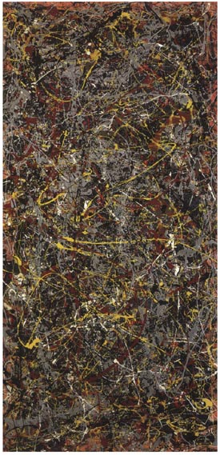

В. Михайлов, Warrax
Переписка на тему социализма
Ранее мы с Валерием уже выкладывали «Переписку на тему национализма». А вот теперь — говорим о социализме.
В. Михайлов (далее по тексту — Самозванец): Мы с Варраксом — люди примерно одного возраста. Оба начинали свою жизнь в провинции. Он переехал в Москву, а я остался провинциалом. Но дело не в этом, а в том, что в примерно одинаковой среде обитания я вырос крайне антисоветским человеком, для которого хуже большевизма, наверно, может быть только религиозная тирания. А вот Варракс относится к советскому с симпатией. Вот мне и стала интересной причина этой симпатии и ее суть. И, как я надеюсь, наш дальнейший разговор с Варраксом будет не спором о том, чья точка зрения вернее, — это бесполезный спор, — а выяснением причины этого нашего разногласия.
Самозванец-1
Давай для начала определимся, как ты относишься к советскому. К прошлому, настоящему и будущему.
Warrax-1
Стоп-стоп.
К большевизму в частности и к коммунизму в общем я отношусь отрицательно.
Советское ≠ большевистское. Еще Нестор Махно выдвигал лозунг «За Советы без коммунистов».
Для меня СССР — это одна из попыток реализаций социализма. В чем-то неудачная, в чем-то — с очень правильными наработками, ныне незаслуженно забытыми. Точнее, специально не используемыми.
Причем если в самом начале это был именно большевизм, социализм по-марксистски, то потом Сталин потихоньку разворачивал вектор развития именно в сторону нормального социализма.
При этом, если смотреть на ранний период, то было много чего, что современному человеку кажется диким, а иногда — и вообще сошедшим с кадра фильма ужасов. Но при этом надо, оценивая ситуацию, исходить именно из тех условий, ресурсов и задач. Скажем, если бы не индустриализация, которая делалась за счет крестьянства «авансом», то страна бы не выдержала Великой Отечественной Войны.
В дальнейшем пошла утрата идеологии — осталась формальная марксистко-ленинская, причем — помимо общей глючности — еще и закостенелая и навязываемая насильно.
Поскольку, как понимаю, тебя интересует именно вопрос «одинаковое детство и разные взгляды на тот период из настоящего», то имеет смысл говорить именно о том периоде, а не о более ранних. Так вот, там и тогда было МНОГО маразма, но он достаточно легко мог быть исправлен, если бы возникло такое желание. Именно в рамках социализма. Следовало отказаться от марксистских догм и т.д.
В частности, вместо интернационализма следовало перейти к русскому социализму (что не означает дискриминации нерусских), разрешить мелкое и среднее предпринимательство и т.д. и т.п.
К разговору в общем: ты предлагаешь говорить о том периоде самом по себе, или же сравнивать (с РФ сейчас или с Западом тогда)? На уровне «для меня лично» или «для страны»? Ну и так далее.
Позднее примечание: интересующимся рекомендую свой цикл постов "Понять СССР", на момент написания этого комментария их уже 48.
Самозванец-2:
А что есть нормальный социализм в твоем понимании? И почему именно социализм?
К разговору в общем: Как будет идти беседа.
Warrax-2
Нормальный социализм — это патернализм по отношению к своей нации. Как я уже не раз писал, национализм и социализм связаны воедино.
Национализм без социализма — фикция. Если нет социальных гарантий, то нет заботы обо всей нации, а лишь о части таковой (скажем, так называемый «национал-либерализм» постулирует преференции для некоего «среднего класса»). Но раз нет патернализма по отношению ко всей нации, то какой же это национализм (вопрос о том, что к нации очевидно не относятся те, кто сам не желает себя к ней относить, а также олигофрены и проч. здесь не раскрываю за очевидностью)? Забота о нации реализуется во всей полноте именно в варианте «семейной» организации общества, где даже труд умелого сантехника считается вполне достойным (и оплачивается выше прожиточного минимума). А не при традиционно противопоставляемом социализму капитализме, где в условиях т.н. свободного рынка выше прочих ценится искусство впарить покупателю побольше некачественного товара.
Социализм без национально-расовой ориентации бессмысленен и превращается в оправдание дегенерации, расового смешения и паразитизма худших. Это уже проходили. Вытягивания одних народов на цивилизованный уровень за счет других больше быть не должно. История четко показала, что дело даже не в «имперстве наизнанку», когда сателлиты живут за счет метрополии, а в том, что некоторые нации в принципе не понимают доброжелательного отношения. Социализм — это не теория всеобщего равенства, это практика организации социума для своих в соответствии с естественными законами.
Вопрос о национализме мы уже как-то разбирали, поэтому не буду ему уделять особого внимания, важно лишь то, что по умолчанию социализм имеет смысл лишь для своей нации; интернационализм — это наследие марксистской трактовки, глубоко ошибочной.
«Социализм — обозначение учений, в которых в качестве цели и идеала выдвигается осуществление принципов социальной справедливости, свободы и равенства, а также общественного строя, воплощающего эти принципы. Термин “социализм” появился во 2-й пол. 19 в. (П. Леру), однако представления о строе социальной справедливости восходят к древним идеям...» (Современный энциклопедический словарь, 1997)
Социализм — это общественный строй, характеризуемый естественным для конкретной нации пониманием справедливости. Именно поэтому он национален: у разных народов разное понимание справедливости, разные обычаи и т.д.
Название «социализм» — историческое. Утопические социализмы Кампанеллы, Мора, Фурье, Сен-Симона, Оуэна и т.д. были именно попытками описать справедливое с их точки зрения общество. В дальнейшем, несмотря на то, что марксизм попытался (и небезуспешно) захватить монополию на трактовку термина, что вредило делу социализма, был сформулирован тезис, отражающий суть социализма: «От каждого — по способностям, каждому — по труду». Именно эта трактовка отражает понимание справедливости в социальном плане для белой расы.
«Общество равных возможностей» — важная черта социализма. Конечно, нельзя говорить об абсолютно равных возможностях — к примеру, в современности невозможно искоренить такое понятие, как блат. Или, скажем богатые и/или с большими связями родители. Однако при социализме использование подобных вещей считается неэтичным, по крайней мере — в явном виде. Главное — то, что при социализме есть социальные гарантии, то есть удовлетворение базовых потребностей человека: жилье, еда, медицина, бесплатное образование (да, образование в современном мире должно быть внесено в базовые потребности). Таким образом, при наличии способностей вполне можно их развивать, а не заниматься выживанием.
И это положение характерно именно для белых. Для желтой расы знатность происхождения имеет решающее значение — скажем, вы в курсе, что в Китае было множество блюд, которые имел право есть только император? Не «дорогих и редких», которые другой не сможет достать, а именно что нет права такое есть.
Про черных вообще лучше промолчать, там даже понятие среднего класса отсутствует — либо ты хозяин (вариант: его приспешник), либо никто.
Примечание. Приходилось слышать возражение, что и при капитализме социальных гарантий хватает, они еще и получше будут! При этом «забывается», что появились эти гарантии именно как вынужденный ответ на социализм: капстраны не могли допустить, чтобы социалистический образ жизни выглядел привлекательно. Лучшее качество этих гарантий, опять же, достигается за счет ограбления третьих стран — да и не везде и не все лучше, чем было в том же СССР.
Исторически социализм применялся как название строя в ряде стран, и логично называть социализмом именно общие принципы, которые имели место во всех реализациях, считая местные особенности второстепенными, формой локализации социализма.
Социалистическими были Советский Союз (интернациональный) и Третий Рейх (шовинистический). Социализм сейчас существует в Китае (национальный китайский) и на Кубе (также местный, а не по Марксу). Нередко упоминается «шведский социализм», но это не верно. Социализм некогда был в ряде стран Восточной Европы — и тут интересен вопрос «почему сейчас его нет». Очень важна с этой точки зрения современная Республика Беларусь (хотя официально социалистической она себя не заявляет).
Вот то, что есть общего; то, что исходит из понимания справедливости — и есть суть социализма.
Социализм — это не просто «свобода от» (нацменов, антирусского правительства, олигархов и т.п.). [Русский (или другой)] социализм — это именно СВОБОДА ДЛЯ.
Свобода творчества.
Свобода созидания.
Свобода личности.
СВОБОДА РАЗВИТИЯ.
Мудрец ищет знаний не ради денег, а ради самого Познания.
Воин сражается не за плату, а за свой Род.
Мастер творит не на продажу, а потому, что не может не творить.
И только низшие варны придают деньгам самоценность — именно поэтому либералы сводят все именно к ним. Как сводил все к деньгам и Маркс, подготовивший социализму ловушку «слева».
Со своей стороны хочу спросить — а какие основные претензии к социализму в целом, как идеологии/социальному строю? Что можно предложить лучше?
Пожалуй, можно для начала на конкретном примере, тем более, что изначально, как понимаю, это и предлагалось. Советский Союз — это отнюдь не идеальная реализация социализма, согласен. Но давай посмотрим на время, которое застали лично. Скажем, с 1975 года (приблизительно) и до 1988 (когда Горбачев стал Генеральным Секретарем ЦК КПСС и начал свою разрушительную деятельность).
Можешь сформулировать, скажем, пять примеров — что тогда очень не нравилось, ну и кратенько пояснить, чем сейчас ситуация с озвученным вопросом лучше. Также хотелось бы услышать, можно ли было улучшить ситуацию без уничтожения социализма в России (и, соотв., разрушения СССР). Область — любая, от идеологии до быта. Просто «что больше всего не нравилось».
Самозванец-3
Привожу пять пунктов того, что мне не нравилось при том социализме, в котором я жил:
1. Полное отсутствие быта как такового. То есть отсутствие нормальных еды, одежды, бытовой техники, бытовой химии, транспорта и т.д.
2. Крайне низкий уровень жизни и отсутствие перспектив (120-250 рублей и «хрущевка» в лучшем случае).
3. Необходимость постоянно лицемерить и играть в «одобрямс».
4. Жесткая цензура и отсутствие информации.
5. Невозможность личностно развиваться.
Про сейчас я уже говорил и повторяю: мы живем в недоразвитой стране, управляемой взращенными в СССР некогда комсомольскими активистами, так что у нас все еще некий социалистический выкидыш, а не что-либо иное.
Про социализм как теорию не скажу ничего, однако, я не знаю ни одного примера социалистического государства, где люди жили бы богатой свободной жизнью. То есть, на сегодняшний день нет ни одной удачной попытки создания социалистической страны. А раз теория не подтверждается практикой, велика вероятность того, что она ошибочна и практически неприменима.
Ты спрашиваешь, можно ли было добиться хороших результатов без уничтожения социализма, а я не понимаю, чего в нем было хорошего, и чертовски рад, что он исчезает, как некогда исчез СССР. Лишь бы только наши комсомольские недобитки не начали реставрировать совок.
Поэтому я и интересуюсь, чем он так привлекает тебя. Пока что я понял, что тебе симпатичен некий национальный социализм с социальными гарантиями, и теми свободами, которые перечислены после слов «свободы для».
Вот только социалистическая свобода – это свобода между шагом вправо и шагом влево.
Что может быть лучше? Мне вполне нравится современный капитализм в нормальных странах, только без политкорректности, победы феминизма и положительной дискриминации, ну да это уже не свойства капитализма, а свойства долбанутости европейцев, как таковых. Не зря же они до этого всех более или менее красивых баб изжарили на кострах, приняв религию рабов.
Кстати, аргумент о свободе для и свободе от некорректен, так как
свобода для - это одна система отсчета, а свобода от - совем иная. И сравнивать
результаты из разных систем отсчета некорректно в принципе.
Так что давай сравнивать от для тех и для тех и для для тех и для тех.
Warrax — 3
Комментирую очень кратко, если тезисы вызывают возражение, разберем подробно.
«1. …отсутствие нормальных еды, одежды, бытовой техники, бытовой химии, транспорта и т.д.»
Что значит «нормальных»? Мягко говоря, неконкретно.
Проблем с бытовой химией не помню. Правда, она меня особо не касалась в то время. Наоборот, сейчас приходишь — и не понятно, какой стиральный порошок купить? ИМХО тут должно быть по сорту каждого вида, и все.
Транспорт — очень даже был. Причем очень рекомендую посмотреть цену на метро и автобус/троллейбус/трамвай тогда и сейчас. Авто — да, дорогих/комфортных не было. Но тут надо смотреть на то, кто сейчас имеет возможность купить «Порше» и прочее. В 80-х же «Москвич» уже продавался практически свободно. Автомобиль — не роскошь, а средство передвижения. Хотя, конечно, модифицировать надо было — никто не спорит.
Бытовая техника делилась на две части. Неубиваемые холодильники, пылесосы и т.п. — в плюс. Конечно, надо было постепенно модернизировать, но подход «купил на двадцать лет и пофиг» мне нравится куда больше, чем «ломается после гарантийного срока, и дешевле новый купить, чем ремонтировать».
Видео/аудио — да, проигрывало. Видео — это уже позднее время, когда застой прое***вал все, что можно (видеомагнитофон изобрели как раз в СССР). Аудио — выпускались очень даже качественные бобинники, проблема была с переносными кассетными. Усилители и колонки — очень даже на уровне, особенно с учетом баланса стоимость/цена.
Одежда — да, была проблема достать. Но то, что было — было некузявым, но, сцуко, прочным и носибельным (кроме почему-то спортивных штанов — вытягивались пузырями на коленях). Вот модное — да. Сейчас же куча моднявых тряпок, а чтобы найти что-то приличное, надо тоже еще поискать — вот попробуй найти приличные женские джинсы НЕ с низкой талией. На книгах еще нагляднее получается.
Что касается еды, то как раз тогда нормальной было гораздо больше — это сейчас едим продукты «со вкусом, идентичным натуральному». Анекдоты про туалетную бумагу в колбасе были глупыми: почему-то именно туалетная бумага как раз была в дефиците. Но чтобы в колбасу сою добавляли?! Причем все это — и на Благословенном Западе тоже. Натуральная еда там стоит весьма недешево.
«2. Крайне низкий уровень жизни и отсутствие перспектив (120-250 рублей и “хрущевка” в лучшем случае).»
Тут, честно говоря, вообще не понял.
Сейчас в эРэФии жизнь у большинства населения хуже, чем была в СССР. Зарплата в провинции куда меньше, чем советские 120-250 рублей, а жилье не светит вообще. При этом никто не мешал поехать на Север или просто подрабатывать — если руки не из жопы растут. Вот спекуляции — те да, пресекались.
Если же сравнивать с Западом в то время, то все равно выигрыш у советского человека. Считать-то надо не просто зарплаты, а с учетом системы.
А) считать остаток после обязательных трат — квартплата и т.п.;
Б) учесть стоимость медобслуживания, образования и т.д.;
В) учесть, что в СССР товары продавали в рассрочку, а на Западе — в кредит;
Г) учесть стоимость транспорта — от бензина для авто и до цен на самолет;
Д) неучтенный вариант. Точнее, просто лень писать длинный список.
«3. Необходимость постоянно лицемерить и играть в “одобрямс”.»
Никто не заставлял. Нужно было строго для карьеры, причем «руководящей». Сейчас не лучше, на Западе — также хуже.
Лицемерие-то — это не только «Слава КПСС!». Заткнуться и не вякать — тоже в тему. И тут смотрим — на зарвавшегося начальника можно было жаловаться в главк, по партийной линии, часто — еще и по профсоюзной. Причем, если все равно приходилось уволиться, то безработицы de facto не было. А вот при капитализме жаловаться бесполезно, т.к. человек похер, важен доход. Причем уволят, и пойдешь в безработные.
«4. Жесткая цензура и отсутствие информации.»
Тут палка о двух концах. Лично я предпочитаю с некоторым трудом доставать записи рок-групп (причем тогда еще цифра только появлялась, так что потом было бы проще), чем когда «Дом-2» и прочие п***ры по ТВ, «русский шансон» по радио и всякие «женские романы» вместо книг.
Причем траблы с роком — это перегиб, который очень легко устраняется, а вот засилие попсы — неизбежное следствие капитализма: выгодно.
Если же посмотреть чуть шире, но при капитализме неизбежно оболванивание народа. Не идеологизация, а именно оболванивание.
«5. Невозможность личностно развиваться.»
Удивлен. Как раз возможностей было куда больше. От кучи бесплатных (или почти бесплатных) кружков в детстве вкупе с нормальным школьным образованием (чего на Западе нет) и до пресловутой уверенности в завтрашнем дне — когда не надо выживать, а можно саморазвиваться. Да, это делали далеко не все — но нигде это все и не делают. Но при капитализме эту возможность убирают у талантливых, но бедных.
«на сегодняшний день нет ни одной удачной попытки создания социалистической страны. А раз теория не подтверждается практикой, велика вероятность того, что она ошибочна и практически неприменима.»
Здесь надо смотреть не абсолютно, а относительно — от стартовой позиции. С учетом этого — какие претензии к Кубе и, особенно интересно, к Белоруссии?
С другой стороны — а какая именно капиталистическая страна является удачной реализацией капитализма?
Примечание: насколько я понимаю, все предъявленные претензии легко решаются в рамках социализма. Не марксистского, конечно.
***
«нравится современный капитализм в нормальных странах, только без политкорректности, победы феминизма и положительной дискриминации, ну да это уже не свойства капитализма, а свойства долбанутости европейцев, как таковых.»
Вообще-то, как раз свойство капитализма, только проявляется не мгновенно, а с учетом развития рынка. Выгодно, чтобы были разнообразные группы, которым можно втюхивать специфический товар. Соотв., нужна толерантность и все такое.
***
«Кстати, аргумент о свободе для и свободе от некорректен, так как свобода для — это одна система отсчета, а свобода от — совсем иная.»
Не понял тезис. Я имел в виду исключительно фетишизацию свободы — когда начинаются призывы к «свободе вообще», имеется в виду исключительно «от». А она — лишь средство (одно из) «свободы для».
Если все запрещено, то делать что-либо «для» не получится. Но даже если все разрешено, то делать что-то — это именно для чего-то.
***
Что-то много текста с меня вышло, а от тебя — пара фраз.
Давай теперь ты распишешь пять пунктов. Не скажу, что они самые-самые важные, просто то, что в голову пришло — с моей т.з. это было на достойном уровне (могло быть и лучше, понятно) в СССР в обсуждаемый период, а при капитализме — увы.
1. Безопасность
2. Образование
3. Медицина
4. Жилье
5. Пенсии
Приложение
http://muhonogki.livejournal.com/464499.html
Уважаемая iguanodonna удивляется:
«Когнитивный диссонанс.
Позвонила подруга, работаюшая в крупном холдинге — у них на работе полная дезинфекция офиса и срочная поголовная флюроография: случайно выяснилось, что у одного из сотрудников туберкулёз, и чуть ли не в открытой форме. Причём не у уборщицы из бывшей братской республики, а у вполне себе благополучного менеджера среднего звена, москвича.
По телевизору широко рекламируется средство от вшей.
У нас на дворе точно двадцать первый век?
Главная информационная новость последней недели — смерть известного бандита и убийцы. Его хоронят с выносом государственного флага, хотя данное действо по закону возможно только при отдании воинских почестей. Фонд Ройзмана в полном составе скорбит и молится об усопшем.
Я чего-то не понимаю, это точно.»
Отвечаем:
1. Туберкулёз это потому, что не в софффке-с. Никого принудительно на всякие издевательства, типа флюроографии, не гоняют! Свобода!
2. Вши — это потому, что свобода-демократия-права человека.
Вот так издевались над детьми в софффке!!!Детей позорили, ежели вшей в школу-детский сад принесли! А у нас, в благословенном Израиле — ЗАПРЕЩЕНО учителям и воспитателям говорить родителям даже, что у ребёнка вши. Почему? А чтоб не оскорбить тонкие натуры, психологическую травму не нанЕсть:-) Вот где свобода и демократия закладывается! В виде гнид.
3. Насчёт гражданина Иванькова ака Япончик: Вы почто уважаемого человека позорите, а? А как же права человеческие? Умер человек, а по закону памяти — о нём ничего или хорошее. А сколько он хорошего фонду Ройзмана сделал? Вы знаете? А сколько он налогов платил? В миллион больше всяких нищебродоффф. Во где собака порылась!!!
4. Когда поймёте — станете членом гражданского общества. С туберкулёзом, вшами и в платочке, чтоб на отпевание уважаемых людей ходить:-) А также на их крестины-обрезания-именины. Такие дела :-)
Самозванец-4
Цены ценами, но на учебу я ездил в настолько набитых автобусах, что можно было ноги поджимать. Маршрутки, не говоря уже о такси, у нас в Аксае появились только после краха СССР. Туалетную бумагу впервые в жизни я увидел тоже только после краха СССР, как и бананы.
Ну а если «Москвич» для тебя машина, то советская одежда тогда тоже тебя должна вполне устраивать. Кстати, вспомни, сколько лет тогда советскому инженеру надо было копить на этот «Москвич», сколько стоять в очереди, за стиралками и холодильниками тоже была очередь, в которой надо было стоять годами, поэтому все это покупалось раз и навсегда, а не как в нормальных странах от переезда к переезду.
А что касается еды, то Новочеркасский бунт (это в нескольких километрах от нас) произошел не от изобилия.
«Если же сравнивать с Западом в то время, то все равно выигрыш у советского человека». С какой стати? У них безработные имели тот же уровень жизни, как у нас секретари райкома. Или ты о каком-то конкретном человеке?
Сейчас же в тех же Штатах цены в полтора-два раза ниже, чем у нас, при том, что их минимальная зарплата в разы выше нашей реальной средней.
Ну по поводу положения дел в России сейчас я уже писал и повторяю, что нынешняя Россия – это не капиталистическая страна, а социалистический выкидыш.
Кстати, про заткнуться и не вякать – это тоже наше. Пример – события во Франции, когда власти приняли какой-то антистуденческий закон.
«Лично я предпочитаю с некоторым трудом доставать записи рок-групп (причем тогда еще цифра только появлялась, так что потом было бы проще), чем «Дом-2» и прочие п***ры по ТВ, «русский шансон» по радио и всякие «женские романы» вместо книг.»
А в том и кайф либерализма, что люди сами выбирают то, что нравится им, а не тебе или кому-то еще сверху.
Куба – очень хорошая страна! Там в прошлом году увеличили норму выдачи куриных яиц на человека и разрешили пользоваться мобильниками. Не знаю, правда, разрешено там играть на саксофоне, или еще нет. А Белоруссия… Так Батьку Москва кормит.
«Что-то много текста с меня вышло, а от тебя — пара фраз».
Так я изначально задумывал эту переписку, как выяснение причин, по которым тебе нравится социализм, а не спор, который ни к чему не приведет.
1. Безопасность. В свои школьные годы я не мог безбоязненно выйти за пределы нашего района – мог очень круто получить. Опять же нормой были побоища район на район, а ночью в Ростове так вообще лучше было не появляться. Так что особой разницы нет. У нас спокойно было разве что при Ельцине. Опять же маньяков у нас всегда было валом – Ростов.
2. Образование. Расскажу на своем примере. В первом советском институте меня долго обучали истории КПСС, марксистско-ленинской философии, политэкономии, совершенно идиотической экономике, программированию на уже тогда устаревших отечественных ЭВМ, совершенно ненужному и бесполезному в том формате иностранному языку, при этом, мне, как будущему инженеру-механику так и не объяснили, по каким принципам назначаются допуски и посадки, а также шероховатость. В результате я вышел кем угодно, но только не инженером. И не один я: за годы советской власти кроме стрелялок в стране не было создано ни одного способного конкурировать с западными аналогами товара. На психолога я уже учился в переходный период. Там было уже лучше. Работать же с людьми я научился, пройдя американистую двухгодичную программу по гештальттерапии. Там я не выучил ни строчки из Пушкина, зато научился квалифицированно работать с людьми, так что я считаю, что наше советское образование – говно полнейшее.
3. Медицины у нас в принципе не было никогда. Она и раньше была убогой, а сейчас так вообще трандец. А у буржуев она на высоте. Причем в той же Канаде бесплатная, и даже лекарства, если они по рецепту врача, выдаются в аптеках бесплатно.
4. Жилье. Сейчас мы живем в по советским меркам шикарной квартире: в трехкомнатной хрущевке. Но как же убого она смотрится по сравнению с современными квартирами не для богачей, где туалет больше, чем у нас спальня. Опять же, тогда в очередях на квартиру надо было стоять не то что годами, поколениями, сейчас же можно свободно купить. Причем покупают далеко не олигархи, а люди с зарплатой в 15-20 тысяч рублей в месяц.
5. Пенсии. На нынешние пенсии можно позволить себе то же, что и на советские. А моя родная тетя, получившая тогда пенсию по инвалидности, перебивалась буквально с хлеба на вермишель, и только потом, когда жена ее сына устроилась на консервный завод и начала воровать мясо, зажила более или менее терпимо. Опять же, если тогда было так зашибись, откуда советская привычка стирать кульки?
И еще: Давай обойдемся без дурацких приложений.
Warrax — 4
Приложения — они не дурацкие, а иллюстрирующие. Приводить их в тексте — слишком большое цитирование. В общем, буду действовать по обстоятельствам — аргументы-то надо подтверждать.
Скажем, в прошлом письме была наглядная иллюстрация — чтобы в рассматриваемый период (1975-88 гг) был туберкулез не в тюрьме у маргиналов, а у офисного работника в крупном городе? Вшей не скажу, чтобы не было вообще нигде и ни у кого, но это было небольшое ЧП, срочное лечение и профилактика контактирующих. А вот в некоторых типа развитых и цивилизованных странах ничего «такого» во вшах не видят и дети продолжают ходить с ними в школу.
Так вот, о самом разговоре.
Чтобы его продолжать конструктивно, надо все же устаканить, что именно обсуждается. Мы договорились смотреть 1975-88гг, но изначальный вопрос был «именно почему я за социализм, а ты — против». СССР указанных годов — это время, которое мы застали, а не «образец социализма» — почему я и указал, что надо учитывать, можно ли было преодолеть недостатки в рамках социализма (причем не обязательно именно того варианта, а социализма вообще).
При этом ты сразу написал, что сравнивать с эРэФией смысла нет — согласен, что сейчас такое, что [cenzored]. Но с чем тогда сравнивать?
Смысл — в контексте разговора — имеет сравнивать именно базовые отличия социалистической и капиталистической систем. И очень важно не забывать, что если мы сравниваем, то сравниваем честно: не выбирая, что где лучше в капитализме, но берем в целом. Есть множество нищих капиталистических стран, за счет которых и благоденствует «золотой миллиард». Капитализм — и там, и там.
Поэтому, скажем, не имеет смысла сравнивать «где лучше медицина, в СССР или в Канаде». Сравнивать надо системы — всеобщая диспансеризация, бесплатная медицина, участковые врачи и т.д. — против страховой медицины. Все остальное — частности реализаций.
Далее. Я буду очень строго отслеживать демагогию, извини уж. Тема очень важная, а я столько лажи видел на эту тему, что не интересно слушать очередную — пусть даже не намеренную. Вот факты, интерпретации и проч. — пожалуйста.
Причем — в масштабе страны.
Не имеет никакого смысла разговор «как кому из нас жилось» — конечно, это будет мелькать все время, но лишь как иллюстрация. Вот, скажем, ты пишешь на мой пункт про безопасность:
«В свои школьные годы я не мог безбоязненно выйти за пределы нашего района – мог очень круто получить. Опять же нормой были побоища район на район, а ночью в Ростове так вообще лучше было не появляться.»
Ну и какое это имеет значение? Вот у нас такого не было в принципе — и ночью можно было спокойно гулять, и по всему Урюпинску. Да, были иногда групповые стычки — но единичные и локальные.
Значение имеет, например:
-
Отсутствие терроризма как класса (именно как класса — несколько исключений можно вспомнить);
-
Безопасность прогулок, включая «чужие» районы и в любое время суток — как правило;
-
Практическое отсутствие железных дверей за ненадобностью (для профилактики: не надо про «нечего было красть» — сейчас-то ставят отнюдь не только богачи);
-
Также важна безопасность финансовая — не было «пирамид», мошенники и спекулянты преследовались по закону и т.д.;
-
При социализме нации были вполне равны, политкорректность и пр. — это производная либерализма/капитализма;
-
Та же всеобщая и бесплатная медицина — это тоже безопасность! Пусть не идеальная, но при социализме невозможно представить ситуацию «нет страховки, иди нафиг» или прописывание лишних платных процедур. Да то же медицинское мошенничество — уринотерапия по ТВ при социализме была невозможна.
-
Много-много неучтенных здесь вариантов.
Проще говоря, в плане безопасности и не знаю НИ ОДНОГО пункта, с которым стало действительно лучше. Можешь привести пример?
Важно. Кажется, писал, но лень перечитывать, так что просто обращаю внимание: смотреть надо системно. Т.е. не просто «с Х было плохо», а «с Х было плохо, зато с Y лучше, чем при капитализме».
Понятно, что субъективно — но поэтому я и требую предъявлять недостатки именно социализма, используя СССР 1975-88 гг как иллюстрацию, но не более того. Я отнюдь не призываю «назад в СССР», не так ли?
Также важно смотреть на то, с чьей точки зрения все преподносится.
Если с точки зрения тупого обывателя — то разговор смысла также не имеет. Заранее согласен, что возможностей потратить деньги на всяческое потребление при капитализме гораздо больше. Если, конечно, эти деньги есть — а вот тут см. начало этого письма.
А кроме потребления обывателя — если его, конечно, не воспитывать — мало что интересует.
При этом, кстати, встречаются странные абберации сознания (это не к тебе, просто вспомнилось стандартное) — скажем, приснопамятные «колбасные электрички». Мол, колбаса была только в Москве.
Фиг там — в 80-е колбасу и т.п. можно было совершенно свободно купить на рынке. Просто люди хотели купить по государственной, а не рыночной цене — вот и все. Имелся свободный выбор: подороже и рядом или подешевле, но подальше. Странный такой выверт: был рынок (вполне себе типа капитализм), но вещающие сейчас против социализма за капитализм предъявляют это как недостаток.
Заодно замалчивая, во сколько раз возросла цена транспорта.
Впрочем, как раз недавно писал статью про альтернативное мышление либералов.
С моей точки зрения важна именно направленность общества на развитие. Социализм это худо-бедно, но поддерживает. Капитализм же направлен именно на потребление, что никак не способствует прогрессу.
С.Лопатников приблизительно прикинул (там несколько постов за тот же месяц):
«…развитие личности в СССР обходилось на полтора-два порядка дешевле, чем развитие личности в США сегодня, тогда как "вещизм" — то есть факультативное потребление — в США обходится в пять-10 раз дешевле относительно доходов, чем он обходился жителям СССР.»
Конечно, не надо все время жить в режиме «ракеты вместо колбасы», но принцип «колбаса вместо ракет» — куда хуже.
Позволю себе художественную цитату по теме, просто хорошо сказано:
«Планеты, на которых установилась так называемая демократия, всегда рано или поздно свертывают космические программы, самоизолируются и через определенный срок угасают. Мертвых или еле живых цивилизаций много больше, чем развивающихся. Цель, которая ставится перед собой любым якобы народным правительством — обеспечить сытое и по возможности не обремененное мыслями существование наибольшему количеству аборигенов, чтобы быть переизбранным на следующих выборах. Опора на толпу неизбежно влечет за собой снижение умственного уровня власти. При возникновении малейших трудностей в экономике под сокращение идут научные и космические программы, в ненужности которых уверен обыватель. Проблема роста населения решается контролем над рождаемостью и производством искусственной пищи. Средства информации ублажают вместо того, чтобы просвещать, или затевают бесплодные дискуссии, отупляющие массовое сознание. Фальшивая еда и варварски гуманная медицина пополняют ряды уродов, делая неизбежным генетический упадок. Итог может быть разным. Самый благоприятный исход — цивилизация, с каждым поколением добивающаяся все более высокого жизненного уровня и медленно сходящая на нет вследствие успехов в демографической политике. Подозреваю, что этот удел грозил и Метрополии. Чаще — повальные эпидемии, голод, крах биосферы, лихорадочные попытки освоить другие планеты, проваливающиеся из-за недостатка технических средств, и новое варварство среди свалок забытых предков. Самый крутой вариант — войны за менее разграбленные земли, за еду и топливо и под конец самоуничтожение, предписанное теорией только тоталитарным режимам. — Горм вырвал у робота кусок мяса величиной с кулак и целиком засунул себе в рот.
Пользуясь паузой, Фенрир вставил:
— Все так, согласен. Но как же Метрополия?
Спустя некоторый срок голос Горма пробился сквозь проеденную мясную преграду и сначала неясно, а затем все отчетливее ответил:
— У каждой цивилизации есть и особенности. У нашего народа тяга к новым странам и новым ощущениям оказалась сильнее, чем тяга к набитому (ик!) брюху. — Горм любовно похлопал себя по животу. — К тому же, корабли Альдейгьи ходили к Драйгену еще тогда, когда у нас не было ни миролюбия, ни демократии, ни цивилизации.
Космическая экспансия — дело для варваров. Она сопряжена с варварскими затратами, с варварским пренебрежением удобствами, с варварским фанатизмом. Мы заселили столько планет, потому что долго сохраняли в себе любопытство и неприхотливость варваров, какими были наши предки, устремлявшиеся в море на длинных ладьях из дуба с парусами, в небо на длинных дирижаблях из рыбьей кожи с паровыми машинами и винтами, в космос на длинных звездолетах из клепаного алюминия с ядерными реакторами. Кром, в нас течет кровь великих ярлов космоса!»
Ладно, это я отвлекся. Вместо приложения.
Так вот, если ты согласен, что смотреть надо именно на отличия социализма и капитализма по сути, не подменяя ее частными примерами и проч., то продолжу ответом на предыдущее письмо с этой точки зрения.
Впрочем, хотелось бы пояснений по одному пункту сразу.
«Жилье. Сейчас мы живем в по советским меркам шикарной квартире: в трехкомнатной хрущевке. Но как же убого она смотрится по сравнению с современными квартирами не для богачей, где туалет больше, чем у нас спальня. Опять же, тогда в очередях на квартиру надо было стоять не то что годами, поколениями, сейчас же можно свободно купить. Причем покупают далеко не олигархи, а люди с зарплатой в 15-20 тысяч рублей в месяц.»
Вот этот вопрос было бы интересно раскрыть подробнее.
То, что сейчас строят квартиры больше, чем при Хрущеве — это понятно, но это из серии «а тогда сотовых и интернета не было». Сравнивать-то надо не с идеалом, а с предыдущими условиями.
Но крайне интересно, как можно купить трехкомнатную современную квартиру, имея доход 15000 рублей в месяц.
Хотелось бы узнать приблизительное распределение бюджета. Для простоты возьмем двоих работающих с одним ребенком лет 5-10 — к этой стадии большинство квартиры в СССР получали. Бесплатно.
Самозванец-5
Я кажется понял, что хотел понять, но не столько из этой переписки, хотя она тоже помогла, сколько из нашего общения не для третьих лиц и прошлых переписок.
Ну да попробую все изложить по порядку. Меня заинтересовал тот факт, что при достаточно схожих условиях формирования ты стал сторонником социализма (тогда я еще не знал, что не просто социализма, а национал-социализма, что в принципе не меняет суть вопорса), ну а мне ближе всего анархизм-индивидуализм.
Раньше я думал, что любить социализм могут лишь те, кто нуждается том, чтобы за них думали, как жить. На твоем же примере я понял, что есть еще одна категория людей. Кстати, прекрасной иллюстрацией того, что я хочу сказать, служит твоя цитата из художки: логичная, убедительная, красивая, но совершенно теоретическая. Прибавим сюда «Мудреца ищущего знаний не ради денег, а ради самого Познания; Воина сражающегося не за плату, а за свой Род; Мастера творящего не на продажу, а потому, что не может не творить», которые тоже существуют лишь исключительно, как некие образы, потому что на практике тот же воин, кроме войны за что-то там должен еще есть, пить, спать, срать и так далее. Опять же ты предлагаешь мне сравнивать какие-то глобально-теоретические вещи, которые на практике оказываются также далеки от реальной жизни людей, как и завоевание других планет.
То есть для тебя социализм и капитализм – это некие социально-логические теоретические модели. Поэтому ты и предлагаешь сравнивать системы.
Далее, как я понял, ты считаешь, что существует некая правильная система ценностей, при этом ты весьма нетерпимо относишься к альтернативным системам ценностей, то есть ты считаешь, что недопустимо не только жить, согласно этим системам, но даже иметь о них положительное мнение, например ты наверняка выскажешься за запрет пропаганды легализации легких и психоделических наркотиков или однополых браков. Другими словами ты являешься сторонником идеологических запретов.
Опять же для тебя намного важней воплощение некой Идеи (например, идеи развития) общества, пусть даже методом принуждения большинства его членов, а реальная каждодневная практическая жизнь отдельно взятых людей и их благополучие (обывательский рай) имеет весьма косвенное значение.
А раз так, то тебе ближе всего такая модель общественного устройства, при которой во главе угла стоит Общая Цель или Общие Цели; в котором существует единая идеология, а все ей чуждое находится под запретом и осуждается; в котором люди не предоставлены себе, а добровольно-принудительно исполняют то, что на них возложено обществом, то есть действуют ради цели, а не исходя из своих интересов. При условии, конечно, что ты разделяешь эти Цель и систему ценностей.
И обывательская точка зрения, которую лично я считаю весьма мудрой и верной, раздражает тебя прежде всего тем, что обывателю глубоко насрать на все эти теории и модели, для него жизнь – это не придумываемая кем-то х***ня, а горячая и холодная вода в кране, нормальное жилье и стол, удобство ботинок… и возможность поддерживать свою жизнь на должном уровне.
Мое же отношение к социализму лучше всего иллюстрирует следующий пост в моем блоге:
«Причина моего отвращения к советскому или совку кроется в том, что все советские недостатки: нищенское существование, отсутствие жизненной перспективы, необходимость постоянно лицемерить и делать вид, что воплощение в жизнь чьих-то идиотских идей – смысл твоей жизни, отсутствие бытовых удобств, пустые прилавки магазинов, бесчеловечность и хамское отношение в советских учреждениях, грязь, вечно перерытые дороги, вечно отключаемые вода и свет и так далее были неотъемлемой частью моей жизни в советские времена; а советские достижения: покорение космоса, создание лучших в мире стрелялок, балет и победы в спорте были, как пожар в Гондурасе. То есть они имели место, но к моей жизни не имели никакого отношения.
Хотите сказать: «А сейчас…»? Так наше сегодня – результат советского вчера, и управляют страной бывшие комсомольские воспитанники с поистине советским отношением к людям».
Идеальным в моем понимании было бы такое общество, в котором каждый думает своей головой и не лезет в чужие дела.
То есть капитализм, а именно капитализм «золотого миллиарда» мне нравится своим материальным уровнем. Против твоего замечания о том, что есть и бедные капиталистические страны, скажу, что пока что нет и не было ни одной социалистической страны, где уровень жизни людей хоть на немного приблизился к уровню жизни этого самого миллиарда. Не нравится же мне современный капитализм своей антилиберальной идеологической направленностью в виде принуждения к политкорректности и прочими диктаторскими вещами.
ПС:
1. По поводу туберкулеза скажу следующее: моя мама – фтизиатр со стажем работы 50 лет. Сегодня специально поинтересовался, какой контингент болел и болеет туберкулезом. Так вот, в советские времена им болела масса приличных людей. Это не к вопросу хуже-лучше, а к тому, что туберкулез – это далеко не болезнь отбросов общества.
2. Об отслеживании демагогии: Твой пример с ценой на транспорт есть ярчайшая иллюстрация демагогического передергивания, так как, говоря о росте цен за проезд, ты умалчиваешь о том, что сегодня совсем иное соотношение цен на услуги и товары, и если сравнивать цены на джинсы и кроссовки, не говоря уже о телевизорах и стиральных машинах, и уж тем более не говоря о ценах на импортную бытовую технику (кассетник АКАЙ стоил 2200 рублей, то есть 20 зарплат инженера), получится совсем иная картина.
3. Бесплатные медицина, образование и т д – это фикция, так как будучи бесплатными, они все равно остаются платными, так как финансируются из бюджета за счет налогов, то есть тех денег, которые люди недополучают с зарплатой и переплачивают, покупая тот или иной товар. Только в этом случае люди вынуждены платить и тогда, когда им это не надо.
Warrax — 5
Да, конечно — тему мы именно обсуждаем, а не играем в вопросы/ответы, так что вполне можно использовать все то, что обсуждали где-либо ранее. Единственно — если один делает конкретный запрос, это скипать не надо, надо ответить.
Категория «социалист, самостоятельно думающий», очень даже есть. Собсно, у меня подавляющее большинство лично знакомых — именно такие.
Приведу еще один пример, извини за большую цитату — сам просил приложения не делать. © Lex Kravetski:
***
Где логика?
У меня, надо отметить, всё шоколадно. Я часто езжу отдыхать за границу, покупаю себе любые девайсы, которые мне нравятся, кушаю в ресторанах. У меня быстрый интернет, компьютер, музыкальный центр, да чего там, у меня из вещей есть практически всё, чего мне хотелось бы иметь. Я без проблем покупаю билеты на спектакли и концерты, это никак не подрывает мой бюджет. Хорошо питаюсь и даже запросто оплачиваю дорогие стоматологические операции. Хотел бы машину — и её бы, не напрягаясь, купил. Квартиру купить было бы тяжелее, но и тут бы справился.
При этом социализма вокруг нет. И не факт, что социализм восьмидесятых не понизил бы мой уровень жизни. Например, я не смог бы купить хорошую импортную стереосистему. То есть, смог бы, но очень и очень не сразу. Мне было бы тяжелее доставать рок-музыку — даже если абстрагироваться от наличия интернета, которого в восьмидесятых просто технически не было. Я бы, наверно, с ощутимо большим трудом добывал бы те иностранные фильмы, которые захотел бы посмотреть. Мне было бы гораздо тяжелее съездить в Париж или Лондон. Да и выбор ресторанов был бы гораздо у́же.
Уж кому-кому, а мне точно следовало бы радоваться крушению социализма. Я от него только выиграл. Но нет, я именно что хочу его возвращения. Не строго в том, конечно, виде, который он имел в восьмидесятых. В радикально обновлённом. Но с теми же принципами — это точно. Правда, с выполняемыми, а не декларируемыми.
С другой стороны, я знаю массу людей, которые перебиваются случайными заработками. Которым не то, что в Париж, в Коломну-то по причине отсутствия денег не съездить. Которые едят чёрт-те что — какую-то хрень, вроде доширака. Которые ресторан видят только тогда, когда их кто-то приглашает гостем на свадьбу. У которых нет не то, что собственной фирмы, не то, что многокомнатной квартиры, не то, что своей мощной бэхи, у них на новую одежду не всегда есть.
И таких людей, наверно, все знают — это не секрет, в России очень многие живут крайне плохо. Однако поражает, что некоторые из этих людей являются ярыми сторонниками капитализма и рынка. Они готовы восхвалять его с пеной у рта и действительно восхваляют. Они ненавидят коммунистов за то, что те «у них всё отымут».
Я несколько раз спрашивал: «у вас-то что отнимать — у вас же нет ничего?». И в таких случаях люди проговаривались. Они невольно давали мне ответ на вопрос, который как тень отца Гамлета регулярно является ко мне в ночной тиши: почему я, у которого всё отлично, хочу социализм, а они, у которых всё плохо, так его ненавидят. Ведь это у меня бы слегонца подотняли, а им, наоборот, существенно бы добавили. Им дали хотя бы нормальную еду. Хотя бы возможность учиться — пусть даже они ей и не воспользуются. Хотя бы какую-то синекуру, но с постоянным заработком. Небольшим, наверно, но уж точно больше среднего у них сейчас. Почему, почему, чёрт возьми, я хочу, а они — нет? Где, блин, логика?
У них иногда появлялось эдакое свечение в глазах, пробивающееся сквозь накативший на глаза мечтательный туманец. Они блаженно откидывали голову на спинку изъеденного молью дивана и говорили мне ответ. Который я тогда не воспринимал как ответ, но сейчас уже понял.
«Понимаешь», — говорили они, — «при социализме ведь уравниловка. Там работаешь — не работаешь, плюс-минус всё та же зарплата. А при капитализме любой может состояться. Открыть своё дело, изобрести чудо-штуку, которая всем будет сильно нужна, и получить много денег. Купаться в богатстве и поплёвывать сверху на всяких нищебродов. Стать Большим Человеком. А то ведь в СССР, даже если в директора выбьешься и кучу денег наворуешь, — потратить их нельзя. Ни личного тебе самолёта, ни виллы на Лазурном берегу. И хоть ты директор, а любой колхозник тебе ровня. Нет при социализме свободы самореализации».
Им при социализме не хватает Свободы. Так они, Скрипач, называют цветовую дифференциацию штанов. И хоть у них нет даже жёлтых, капитализм даёт им свободу мечтать о малиновых. Им греет душу сам факт, что малиновые штаны формально разрешены. Пусть лично у них их в принципе не будет, пусть они до гроба будут лопать пластиковую кашу, но зато можно вот так вот затуманить глазки и помечтать. Нет, не о том, как ты запускаешь космический корабль к Альфе Центавра, не о том, как ты находишь лекарство от рака, не о миллионных тиражах твоего романа, не о великих победах и великих свершениях — о том, как ты в малиновых штанах поплёвываешь на тех, с кем сейчас ты вынужден сидеть на изъеденном молью диване.
Социализм делает Неприкасаемого обычным гражданином, ничем не отличающимся от остальных граждан по своему положению — только умом, талантами, навыками, подвигами. Но одновременно Неприкасаемый теряет надежду стать Кшатрием-правителем (Тут я не согласен с тем, что нынешняя «элита» — это кшатрии. Прим. Warrax). А она для него всё. Ему не нужен космос. Ему нужна Свобода Дифференциации, которую он почему-то называет «равенством». И эта виртуальная, невыполнимая надежда стать выше окружающих перевешивает любые плюсы социализма.
«Социализм хочет отнять мою прелес-с-сть, мастер Фродо». Хотя ты, Горлум, сидишь в мокрой неуютной пещере, жрёшь сырую рыбу, а волосы твои давно выпали. И через твою золотую безделушку на тебя давно уже таращится Око Мордора.
Если бы рабам вовремя пообещали формальную возможность самим стать рабовладельцами, они бы сами лично поубивали сторонников отмены рабства. Пусть бы даже в реальности никто из них рабовладельцем не стал, но ведь отмена рабства означала бы принципиальную невозможность хоть когда-нибудь самому завести рабов.
Ответить на мучавший меня вопрос можно довольно кратко: «я хочу гарантий для всех, а они хотя бы виртуальной возможности, но чтобы только для себя». От материального благосостояния сиё не зависит и им не лечится.
***
Как говорится — ППКС. Сам не раз сталкивался с подобными рассуждениями.
Что касается «теоретического» — так все правильно: прежде, чем начать что-то делать, надо понять, что именно надо делать. Нужна именно теория.
Если же жить «как получается» — то это автоматом означает, что плясать имярек будет под чужую дудку. Идеи у него будут не свои — а внушенные.
Воин, кроме войны, должен есть, пить, спать, срать и так далее. Никто не спорит.
Но дело именно в том, что это как раз низовая потребность, которая есть у каждого — так что о ней говорить-то? Социализм как раз это и обеспечивает — причем для всех.
А вот дальше идут потребности не физиологические, а психологические. И тут уже логично смотреть на корреляцию с термином sapiens в видовом названии homo.
Вот почему возникла ассоциация «должен жрать/срать», а не «должен иметь возможность на творческий досуг, саморазвитие» и т.д. и т.п.?
Да, сравнивать надо именно глобально-теоретические системы — именно из них все следует. Можно, конечно, сравнивать частные реализации — но смысл-то? Выше уровня «трава была зеленее» это заведомо не поднимется. Да и с чем сравнивать-то? Одно дело — капитализм какой-нибудь Швейцарии, тут, понятно, «совок» обзавидуется, ибо Колбасы Сто Сортов, а ракеты его не интересуют. Ни космические, ни баллистические.
Но ведь где-нибудь в Зимбабве — тоже капитализм!
И как-то странно, что те, кому очень не нравится социализм, сравнивает СССР именно с «золотым миллиардом», а не с Зимбабве. Как думаешь, зачем? :-)
Согласен — я однозначно против легализации легких и психоделических наркотиков и однополых браков. Что никак не означает, что я-де сторонник идеологических запретов.
Я просто не возражаю против таковых и считаю их применение
оправданным — если это целесообразно.
Точно также я НЕ «за аборты», но возражаю против их запрещения.
В общем виде: нельзя сводить позицию к «все запрещать» или «все разрешать». Всегда есть некие рамки, и вопрос именно в том, где их ставить.
И вот тут я всегда могу обосновать свою позицию — а не просто заявить «я так считаю». Исходя из конкретных условий, целей и проч. — а не абстрактного «хочу как можно больше запретить» или же «я за то, чтобы запретов было как можно меньше».
Обывательский рай, понятно, у меня вызывает лишь отвращение. Я вообще к «раю» отношусь весьма отрицательно — что же ты от сатаниста хочешь :-)
При этом идея развития — это не «например», а именно что (условно) Главная Идея. Все просто: как может быть разумный индивид против развития?
Конечно, надо смотреть на «цену вопроса» и проч. в каждом конкретном случае, но глобально — разум именно за развитие, автоматом. Если против — то это индивид, может быть, и умный, но ни разу не разумный (т.к. для него разумность не является базовой ценностью).
И вот тут очень хотелось бы узнать про мудрость и верность обывательской «идеологии» — точнее, ее отсутствия. Поподробнее — начиная с того, с какой точки зрения это мудро и верно.
Я, скажем, могу сказать, что для меня ценностью является именно познание — Вселенной, микромира, психики… всего. Разум именно что стремится познавать. Это проявляется уже у высших животных.
А есть живые существа, которые разумом не обладают — так, рефлексы жрать/срать. Мне как разумному как-то странно понимать, что это — чей-то идеал.
Что касается «наше сегодня — результат советского вчера», то повторюсь — а давай сравним не с «золотым миллиардом», а с другими странами, не менее капиталистическими, но «третьего мира».
Надо сравнивать именно системы социализма/капитализма — что следует из них, а что является частной локализацией.
Скажем, при капитализме надо поддерживать безработицу как угрозу оказаться «за бортом», из социализма же следует отсутствие безработицы, но при этом санкции по отношению к тем, кто не желает трудиться. Или — произвол работодателя против больших сложностей увольнения бездельника (и то, и то — относительно, разумеется).
Вот такие вопросы имеет смысл обсуждать.
«Идеальным в моем понимании было бы такое общество, в котором каждый думает своей головой и не лезет в чужие дела.» — а тут, увы, самопротиворечиво.
Либо приоритет «не лезть в чужие дела», либо приоритет «думать своей головой», поскольку если думаешь, то понимаешь, как надо — а реализовать это невозможно без того, чтобы воздействовать на других в соотв. направлении. При этом не надо забывать, что интеллектуальное большинство думать вообще не любит и не умеет. О чем, кстати говоря, ты очень много пишешь у себя в ЖЖ — и тут у нас позиции сходятся.
Но получается как-то странно: мол, общечеловек вызывает омерзение, но при этом надо ему потакать.
То, что капитализм «золотого миллиарда» нравится своим материальным уровнем — это понятно. Вот только это невозможно без жизни за счет других стран («третьего мира»).
Таким образом, возникает подмена тезиса: мы собирались сравнивать социализм и капитализм, а тут, оказывается, предлагается сравнивать уровень жизни труженика и вора/бандита международного уровня. У второго жизнь шоколаднее, кто спорит-то?
Причем даже в этом случае, подозреваю, идет сравнение не «для каждого», а по т.н. «среднему классу». Причем опять же: «Не нравится же мне современный капитализм своей антилиберальной идеологической направленностью в виде принуждения к политкорректности и прочими диктаторскими вещами». Ну так из капитализма это и следует — необходимо для глобализма.
Т.е. очень похоже на то, что капитализм ты берешь «идеальный», а социализм — как конкретную реализацию с соотв. недостатками.
***
Что касается туберкулеза, то ссылки на «мне мама сказала» — не катят. Да, теоретически мог заболеть любой — но практически чахотка вполне лечится на ранней стадии хорошим питанием и соотв. лечением. Фуа-гры в СССР было мало (фигня, кстати, мне не понравилась), но именно чтобы голодали в обсуждаемое время — очень редкое явление. Опять же, ежегодная флюорография и все такое.
Чтобы не искать статистику, напоминаю пример со вшами: в это время в СССР (по крайней мере, среди белого населения) вши были почти что ЧП. А на Благословенном Западе™ это и сейчас — нередкое явление. Как-то читал форум, где на эту тему обменивались мнение эмигрантки. Впечатлило.
Про цены я уже писал, точнее, цитировал Лопатникова: «…развитие личности в СССР обходилось на полтора-два порядка дешевле, чем развитие личности в США сегодня, тогда как "вещизм" — то есть факультативное потребление — в США обходится в пять-10 раз дешевле относительно доходов, чем он обходился жителям СССР.»
Да, джинсы были жутко дорогими. А вот метро — жутко дешевым.
Поэтому и говорю, что надо сравнивать комплексно. Не «шмотки/аппаратуру», а включать и бесплатную квартиру, и бесплатную медицину (кстати, рекомендую ознакомиться с тем, что такое страховая медицина и как она работает на самом деле).
Вообще, по отношению к медицине вызывает смех «люди вынуждены платить и тогда, когда им это не надо».
Несколько упрощенно: при социализме у доктора есть интерес вылечить как можно быстрее — незачем ему время лишнее тратить.
При капитализме как раз выгодно, чтобы пациент подольше болел — денюжки за лечение он платит, заодно ему можно сделать лишние анализы — тоже не забесплатно и т.д. Понятно, что лекарства надо продавать подороже — и т.д. и т.п.
И особенно наглядно, когда случается что-то глобальное типа сложной операции, на которую денег не может накопить подавляющее большинство населения. Как раз логична система «вероятность, что потребуется, 1/1000000, стоимость 1000000, так лучше платить по рублю, чем искать миллион, если потребуется».
Особенно смешно то, что страховая медицина по западному образцу — это тоже «платить, когда и не надо», но только ГОРАЗДО больше.
***
Хотелось бы раскрытия вот этой темы:
«Жилье. Сейчас мы живем в по советским меркам шикарной квартире: в трехкомнатной хрущевке. Но как же убого она смотрится по сравнению с современными квартирами не для богачей, где туалет больше, чем у нас спальня. Опять же, тогда в очередях на квартиру надо было стоять не то что годами, поколениями, сейчас же можно свободно купить. Причем покупают далеко не олигархи, а люди с зарплатой в 15-20 тысяч рублей в месяц.»
Крайне интересно, как можно сейчас купить трехкомнатную современную квартиру, имея доход 15000 рублей в месяц. Для простоты возьмем двоих работающих с одним ребенком лет 5-10 — к этой стадии большинство квартиры в СССР получали. Бесплатно.
Как приблизительно распределяется семейный бюджет с учетом покупки квартиры?
***
Вообще же с моей т.з. все просто: социализм — это общество справедливости, заботы о нации, стремление к развитию. Даже если кого-то надо пинать под зад кованым сапогом.
Капитализм же — это потребление как самоценность, что неизбежно приводит к деградации.
Возможно, именно это имеет смысл обсудить.
Вот как пример возьму твое:
«Образование. Расскажу на своем примере. В первом советском институте меня долго обучали истории КПСС, марксистско-ленинской философии, политэкономии, совершенно идиотической экономике, программированию на уже тогда устаревших отечественных ЭВМ, совершенно ненужному и бесполезному в том формате иностранному языку, при этом, мне, как будущему инженеру-механику так и не объяснили, по каким принципам назначаются допуски и посадки, а также шероховатость. В результате я вышел кем угодно, но только не инженером. И не один я: за годы советской власти кроме стрелялок в стране не было создано ни одного способного конкурировать с западными аналогами товара. На психолога я уже учился в переходный период. Там было уже лучше. Работать же с людьми я научился, пройдя американистую двухгодичную программу по гештальттерапии. Там я не выучил ни строчки из Пушкина, зато научился квалифицированно работать с людьми, так что я считаю, что наше советское образование — говно полнейшее.»
Учились мы в одно время, но меня истории КПСС, философии и политэкономии обучали отнюдь не долго — всего по занятию в неделю в течение года, если склероз не подводит. Да, я предпочел бы изучать историю России/СССР вообще, а не КПСС, и изучать гносеологию, а не диамат. Но тем не менее — подход «и естественнонаучник должен знать кое-что гуманитарное» — правильный подход.
Как может быть иностранный язык бесполезным — я даже и не знаю. Сейчас вот очень жалею, что тогда халявил — учу сейчас английский заново практически.
Да, у советского образования был недостаток вида «а теперь, студент, забудь то, чему тебя учили в институте, и будем изучать то, что есть на самом деле». Однако я не считаю этот недостаток столь уж существенным по элементарной причине: производство всегда конкретно и видов его — множество. Невозможно научить всему. И куда логичнее научить думать, чтобы потом он мог быстренько разобраться самостоятельно при помощи практических советов уже на месте. «Студент — это тот, кто способен выучить и сдать китайский язык за три дня до экзамена по чужому конспекту» ©
Да — не буду спорить — это работало отнюдь не идеально. Большинство преподов требовало зубрежку, понимание было вторично, но тем не менее, если учиться, а не просто получать диплом, то навык понимания прокачивался изрядно.
Другой подход — западный, «пройти узкоспециализированные курсы и уметь делать только это». Без понимания связи с другими науками, без цельной картины мира — просто «винтик общества».
Я даже соглашусь, что в СССР был перекос в сторону десяти классов — большинству хватило бы и восьми, при этом ПТУ должны были бы выпускать квалифицированных рабочих, а не то, что было. Но, опять же, это исправлялось в рамках социализма.
При Сталине, насколько я в курсе, в школах была логика отдельным предметом…
Из статьи академика Владимира Игоревича Арнольда «Нужна ли в школе математика?»:
«Бруно Понтекорво рассказывал, что в 60-х годах однажды заблудился в окрестностях Дубны и добрался до дому, подъехав на тракторе. Тракторист, желая быть любезным, спросил: “А чем вы там в Институте в Дубне занимаетесь?” Понтекорво честно ответил: “нейтринной физикой”. Тракторист был очень доволен беседой, но заметил, похвалив русский язык иностранца: “Все же у Вас сохраняется некоторый акцент: физика не нейтринная, а нейтронная!” Рассказывая в Италии эту историю, Понтекорво добавил: “Я надеюсь дожить до того времени, когда уже никто не будет путать нейтрино с нейтронами!” Докладчик в Академии, в Трудах которой я прочел вышеизложенное происшествие, комментирует это так: “Сейчас мы можем уже сказать, что предвидение Понтекорво исполнилось: теперь уже никто не знает не только, что такое нейтрино, но и что такое нейтрон!”»
Образование бывает разное, но для того, чтобы называть образование образованием, знания и навыки должны подаваться именно системно. Именно так обстояло действие в СССР. Знания математики применялись в физике, физики — в химии и так далее. Даже обладающий средними способностями ученик по окончании средней школы получал знания, позволяющие судить о мире как о сложной взаимосвязанной системе, вследствие чего мог судить, что, как и почему происходит. Во всяком случае, понимал, что электричество берется не из розетки, а серная кислота — не отстирывается. При наличии же способностей выпускник приучался думать самостоятельно. Еще раз соглашусь, что советская система образования имела много недостатков, равно как и преподаватели далеко не всегда соответствовали требуемому уровню. Но сама система была направлена на то, чтобы знание о мире было цельным, а дети учились думать (хотя и в рамках марксизма и т.п., но это — отдельный вопрос). Школа давала объем знаний, пригодный для поступления в любое высшее учебное заведение, лишь для ведущих вузов надо было уметь решать задачи сложнее, чем в школе.
Что этим достигалось? Любой подросток, у которого хватало способностей, мог получить высшее образование — причем не формальное, а на уровне, превышающий средний международный. При этом были и стипендии, и общежития, и возможность подработать.
Для сравнения — В.И. Арнольд, «Путешествие в хаосе»:
«Во Франции я читаю студентам такие же лекции, как и в Москве. Принимаю там экзамены. И вот во время письменного экзамена парижский студент спрашивает меня: “Профессор, я нахожусь в затруднении: скажите, четыре седьмых меньше или больше единицы?". Это студент четвертого курса, математик! Он провел сложные вычисления, решил дифференциальное уравнение и получил верную цифру — четыре седьмых. Но дальнейшие его расчеты шли двумя путями в зависимости от того, больше или меньше единицы оказывается полученный результат. Все, чему я его учил — а это дифференциальные уравнения, интегралы и так далее, — он понял, но я его не учил дробям, и дробей он не знает...”»
Это — не образование, а дрессировка. Когда-то я прочел образное сравнение систем образования в СССР и современного ему образования в США: «русский, вынужденный мыть туалет после окончания школы, будет переживать из-за того, что он, обладая знаниями, вынужден мыть туалет; американец же будет гордиться тем, что у него — самый чистый сортир в Штатах». Очень наглядно, на что направлены обе системы: получение знаний и формирование «винтика» — что характерно, в наличии «безликих винтиков» обвиняли именно СССР.
Совсем наглядная иллюстрация. Вячеслав Загорский, «Свет пиара в сумерках просвещенья» (Русский Журнал, 11 июня 2004):
«На Московской химической олимпиаде 2003 года мы предложили девятиклассникам сравнить противогололедные реагенты, применявшиеся и применяемые в Москве, с точки зрения их физико-химической эффективности для плавления льда. Среди немалого числа правильных ответов (лучший реагент – ныне запрещенная поваренная соль) удивили повторяющиеся рассуждения вроде такого: “Поскольку везде сообщалось, что наиболее лучшим является хлористый кальций (“ХКМ”), то он и является самым эффективным, а поваренная соль — самая плохая, потому что ее запретили”. Вместо расчетов и сравнений — цитирование рекламы. И так рассуждали школьники, прошедшие отбор на окружных олимпиадах по химии, то есть — не с самыми плохими знаниями. Это и есть идеальный PR — зачем думать, если везде сообщают...»
Я уж лучше немного историю КПСС позубрю, чем буду учиться по «модульной» системе и проч.
Самозванец-6
Начну с того, что катит, а что не катит. Мама в данном случае – фтизиатр с 50-летним стажем, причем она и сейчас работает фтизиатром. Но для тебя это почему-то не катит. Вместо этого катит какой-то истерический вопль про каких-то там вшей с совершенно шизово-популистским комментарием. Израиль – это Израиль. У иудеев и суббота начинается в пятницу, и по телефону в субботу говорить нельзя. Также катят в качестве подтверждающих что-то там примеров отрывки из фантастических произведений, зато примеры из реальной жизни почему-то не катят.
Относительно рассуждений в «Где логика»:
1. Приведу пост из своего блога:
«СИНДРОМ МАУГЛИ
Маугли или дети, которых в силу различных причин с младенчества воспитывали какие-либо животные… С одной стороны, их нельзя назвать недоразвитыми, так как, воспитанные, например, собакой, они прекрасно особачиваются. С другой стороны, очеловечиваются они с огромным трудом, да и то, скорее, как дрессированные в цирке животные, чем как люди в процессе воспитания. При этом среди людей они чувствуют себя чужими, считая тех же собак (в нашем примере) намного более родными существами. Так они и остаются полузверьми-полулюдьми. Причем чем позже их обнаруживают, тем сложнее их очеловечивать. Так устроен наш психический аппарат.
А это значит, что все мы – тоже своего рода маугли, натасканные на существования в той или иной среде обитания разве что воспитанные не животными, а другими людьми. И нам, как и тем маугли, которых воспитывали животные, после определенного возраста также сложно и даже практически невозможно полностью адаптироваться в другой среде обитания. Новая среда навсегда останется для нас чужой, как и мы для нее, а раз так, то нашим естественным стремлением будет возвращение к старой, привычной среде обитания, какой бы ужасной она ни казалась нам со стороны. Отсюда и те 40 лет, в течение которых Моисей таскал евреев по пустыне, пока не умер последний свидетель плена; отсюда и стремление эмигрантов притащить на новое место свою старую среду обитания, - для этого они селятся вместе большими группами и стараются обустроить захваченное пространство согласно привычной среде обитания; отсюда и стремление оставшихся советских людей вернуть СССР, несмотря на все ужасы и скотство большевизма.
Отсюда и наше нежелание совершать квантовый переход через дверь».
2. Но ключевое слово автор цитаты произнес, и это слово «дали». То есть при социализме у тебя сначала все отбирают, а потом дают то, что посчитают нужным. И, как ты правильно сказал, социализм обеспечивает всем минимальный уровень жизни, а дальше, как говорится, хочешь жни, а хочешь куй – все равно получишь х***й». Вот только за этот х***й человека еще заставляют и вкалывать, так как нежелание работать – преступление.
Так что если автор цитаты не понимает, что есть люди, которые не хотят жить в обществе, где все всем кто-то дает, а хотят иметь пусть мало, но свое плюс хоть и маловероятную но все же возможность выбиться в люди, то этот говорит о его неспособности мыслить за пределами собственного догматизма.
3. Также показательна и фраза про рабов. Вот только человек, который стремится к жизни, в которой ему все дают за то, что он делает, что ему скажут, и есть раб.
Теперь о теориях. Теории подтверждаются практикой. И ценность той или иной теории зависит от того, как она воплотилась на деле. Буржуи смогли создать «золотой миллиард», а большевики нет. Опять же буржуи и космос осваивают, и ракеты строят, и науку двигают, и коллайдер построили, так что все рассуждения о том, что капитализм несовместим с развитием – это чушь. Может, теоретический капитализм в умах тех или иных идеологов и не совместим, ну так это говорит об адекватности их умов, а не о капитализме. За счет чего – это вопрос третий. А что там получается на словах, так мне это глубоко пофигу.
Почему я все время сравниваю СССР с Европой и США, а не с Зимбабве? Тому две причины:
1. СССР провозглашалась, как развитая страна, и если так, то и сравнивать ее надо с развитыми странами, а если при всех воплях о своей крутости большевики смогли довести ее до уровня развития Зимбабве, то это – наилучшее доказательство несостоятельности социализма.
2. Я не настолько знаком с положением дел в Зимбабве и не знаю, капитализм там или переход от феодализма к непонятно чему.
По поводу произвола работодателя и прочих страшилок капитализма, тут ты точно далеко от положения дел. У них есть профсоюзы, которые являются мощной силой и которые действительно защищают трудящихся.
Далее, ты пишешь: «если думаешь, то понимаешь, как надо — а реализовать это невозможно без того, чтобы воздействовать на других в соотв. Направлении», и пишешь совершенно верно. Вот только прежде, чем решать, как надо, надо решить, надо ли вообще. И тут налицо либо необходимость в убеждении (а если людям это нахрен не надо, то их достаточно трудно убедить), либо в принуждении. Причем чем меньше это кому-нибудь нужно, тем более привлекательно именно принуждение.
То есть диктатура (а социализм – это всегда диктатура) – это средство достижения на***й никому не нужных целей.
Далее, не надо подменять понятия: думать своей головой в духе «мне нравится социализм» в более или менее либерально-демократических условиях – это одно; а думать своей головой в условиях господства какой-либо доктрины, как единственно верной – это уже совсем другое. Доказательство – судьбы советских и не только диссидентов.
Теперь о мудрости обывателя. Она заключается в том, что люди не забивают себе головы всякими теориями, а трудятся, создавая максимально комфортные условия жизни для себя и своих близких, благодаря чему и создается благосостояние общества, благодаря чему и появляются средства на полеты в космос и прочие научно-технические достижения, которые со временем продолжают улучшать жизнь людей. А про «обывательщина – это быть под кем-то» могу сказать, что это – чушь собачья. В качестве доказательств могу привести навскидку как Великую Отечественную, так и войну 1812 года, когда на борьбу с захватчиком поднялись именно обыватели, чтобы защитить все то, что они создавали из поколения в поколение.
Про образование тоже можно умничать сколько угодно, вот только их хреновые инженеры и рабочие создают «Тойоты», «Фольксвагены» и «Шевроле», а у нас как делали говно, так и продолжают делать. И так во всем за исключением разве что оборонки.
ПС: Про интернет и мобильники. Во времена СССР их не было, но ксероксы уже были. Причем к каждому ксероксу был прикреплен сотрудник КГБ, который давал письменное разрешение при копировании тех или иных бумаг, дабы не копировался самиздат и прочая антисоветчина. Так что будь у нас сейчас социализм, интернета, скорее всего, у нас бы не было.
Warrax — 6
Прежде всего: не катит любая ссылка на авторитет вместо аргументации, столько бы лет человек не работал и все такое. Это, извини уж, демагогия в незамутненном виде — argumentum ad verecundiam.
Другое дело, что если у тебя мать специалист по затронутому вопросу — то она легко может отыскать соотв. статистику и т.п., что будет иметь смысл обсуждать.
Это, кстати, очень даже иллюстрация к «замечательному американскому образованию строго по теме без всего лишнего» — так учат зазубривать определенные методики, и все. А вот объяснить, что есть аргумент — «лишнее». Именно что «вера гуру». Для американской психотерапии очень характерно.
В СССР вши, понятно, были; но были редкостью и практически позором. «Вшивый» — это ругательство. А вот на Западе это отнюдь не только в Израиле. Долго копать лениво, но вот с ходу нагуглил:
«Для тех, кому никакие химические препараты уже не помогают, в США работают специальные фирмы по ловле блох и вычесыванию вшей. Салоны по поиску в головах плодятся по всей стране. Мастера можно вызвать и на дом. Стоимость их услуг может доходить до 300 долларов за голову и выше.
Например, сеть салонов Hair Fairies… сбором вшей она занимается с 1999 года и обслужила тысячи семей с детьми.…
Ну и вот — показательное обсуждение.
«Есть в аристократической Англии и некая национальная болячка - вши. В России последняя эпидемия вшей была, кажется, во время войны. А вот у англичан разговор о рецидивном педикулезе не вызывает даже движения мускулатуры лица. В общем - это как флю, норма. Совет: купите на всякий случай специальный лосьон, коих сейчас много, и запомните: когда чешется чисто вымытая голова - лучше сразу обратиться к матроне. И еще. Не надо бить лицо тому, кого подозреваешь как заразу - это не принято. Обработал и забыл, так вот...»
Впрочем, не буду зацикливаться на вшах — это я просто толсто намекаю на то, что надо как-то тезисы аргументировать.
Ладно, перейдем к обсуждению.
Оно как-то уже становится совсем гротескным. Говоришь, что «при социализме у тебя сначала все отбирают»? Что именно отбирают — конкретно?
Родился человек, с рождения имеет бесплатное медобслуживание, затем — детсад, школу, вуз, квартиру… Что конкретно отобрали?
«И, как ты правильно сказал, социализм обеспечивает всем минимальный уровень жизни, а дальше, как говорится, хочешь жни, а хочешь куй – все равно получишь х***й». Вот только за этот хуй человека еще заставляют и вкалывать, так как нежелание работать – преступление.»
Беллетристика как обоснование? Ну-ну.
Пресловутая уверенность в завтрашнем дне — минимальный уровень — позволяет тем, кто способен и хочет, развиваться, не заботясь о заработке. Можно не гнаться за деньгами, а заниматься любимым делом. Заниматься творчеством (в широком смысле), не имея средств к существованию, как-то грустно.
Даже на личном примере: я родом из Урюпинска, райцентр на 40 тысяч жителей. Поступил в МГУ, получил общежитие и стипендию. Сейчас же — фиг бы это у меня получилось, т.к. при нынешнем уровне цен/зарплат родители просто не смогли бы дать мне денег на жизнь в Москве, а стипендии сейчас даже не смешные.
Да, нежелание работать — преступление.
В более развернутом виде: законы должны соответствовать справедливости. Если дают медобслуживание, квартиры, образование и т.п. бесплатно — то не работать на общество в ответ мягко говоря, нечестно.
Конечно, логично было бы, чтобы человек, который решил бы из принципа не работать, отказывался бы юридически от того же медобслуживания и т.д. — и фиг с ним. Но эта идея хороша для фантастики в стиле dark future, а не для государственной политики.
«Буржуи смогли создать «золотой миллиард», а большевики нет.»
Исключительно за счет эксплуатации третьих стран.
Ты считаешь, что надо было делать так же?
«Опять же буржуи и космос осваивают, и ракеты строят, и науку двигают, и коллайдер построили, так что все рассуждения о том, что капитализм несовместим с развитием – это чушь.»
Онтологически — несовместим.
Видел «Идиократию»? Если нет — советую посмотреть. Там очень наглядно сказано, чем занимаются ученые при капитализме.
«СССР провозглашалась, как развитая страна, и если так, то и сравнивать ее надо с развитыми странами»
Еще раз повторяю: системная ошибка.
СССР был вполне самостоятелен — даже наоборот, занимался дотациями всяких негров, чего делать — по крайней мере так, как делалось — не стоило.
«Золотой миллиард» же наоборот, выкачивал бабло из третьего мира — и некорректно его рассматривать в отрыве от такового.
Сравнивать надо именно системы.
А то по такой «логике» можно, скажем, заявить, что народу в РФ живется куда лучше, чем в СССР, если посмотреть на Рублевку и проч. и не смотреть на мелкие города и тем более деревни.
Что касается мощных сил профсоюзов Запада — то тут я не в теме. И не вижу смысла копать — как они не защищай трудящихся, бесплатных квартир при капитализме не выдают, как и бесплатной медицины.
Впрочем, ты что-то говорил про Канаду — так вот, еще одна демагогия: если там и есть полностью бесплатная, качественная и всеобщая медицина, то это именно в Канаде, а не во всех капстанах, так что свойство не системное.
«Теперь о мудрости обывателя. Она заключается в том, что люди не забивают себе головы всякими теориями, а трудятся, создавая максимально комфортные условия жизни для себя и своих близких, благодаря чему и создается благосостояние общества, благодаря чему и появляются средства на полеты в космос и прочие научно-технические достижения, которые со временем продолжают улучшать жизнь людей.»
Вообще-то полеты в космос — это очень неудачный пример «за капитализм». СССР уж очень наглядно демонстрирует, что социализм тут не хуже.
А важно тут именно системное. У социализма есть Идея, и ради нее клепаются ракеты, если упрощенно.
У капитализма есть лишь желание создать максимально комфортные условия — причем за счет других. А вот делать ракеты и проч. — мотивации нет. Делается, но вынужденно. Чтобы показать, что не хуже социализма и т.д.
Обобщенно: у капитализма нет мотиваций совершать то, что не приносит деньги.
Также не понятно, почему стремление жрать/срать и т.п., ни к чему (кроме сугубо материального) не стремясь, называется мудростью.
Кстати, только что пробежало по френдленте, как раз к «отсталости» СССР.
Россия поставляет в США двигатели РД-180 для тяжелых ракет Атлас III и Атлас V.
Что такое РД-180? В СССР был создан двигатель РД-170/РД-171 для ракеты-носителя «Энергия», первый пуск — 1985 год.
После распада СССР был выигран конкурс, объявленный американской компанией Локхид Мартин, и под это сделан РД-180, представляющий собой половинку РД-171 (у того было четыре камеры сгорания, у РД-180 — две).
Вот эти половинки того, что в СССР летало еще в 1985 году, и являются по сей день хайтеком, который США закупают у России, через почти 25 лет, как в СССР впервые полетело «целое» вдвое более мощное.
Ссылки по теме:
http://www.npoenergomash.ru/engines/rd171m/
http://www.npoenergomash.ru/engines/rd180/
«Про образование тоже можно умничать сколько угодно, вот только их хреновые инженеры и рабочие создают «Тойоты», «Фольксвагены» и «Шевроле», а у нас как делали говно, так и продолжают делать. И так во всем за исключением разве что оборонки.»
Сам себе противоречишь — оборонка это не «разве что», а как раз самое ответственное и сложное. А то, что автомобили после 70-х начали ощутимо отставать — вина не инженеров, а тех, кто не давал им работать.
При Сталине же наши машины брали призы на международных выставках.
«Причем к каждому ксероксу был прикреплен сотрудник КГБ, который давал письменное разрешение при копировании тех или иных бумаг»
Вот чего не надо — так это демшизовых бредней. Еще напиши, что «в Москву ездили за колбасой на электричках, потому что колбасы в Подмосковье не было».
Вполне возможно, что на некоторых, особенно режимных предприятиях так и было, но я лично видел ксероксы без такого приложения в погонах. И уж точно это не является системным свойством социализма.
***
Я тут подумал и пришел к выводу, что основное различие у нас сводится именно к тому, что ты радеешь за потреблядство и желательность отсутствия каких-либо мировоззренческих идей.
Так?
***
ТРЕТИЙ раз пишу, что очень хотел бы услышать подробный ответ на этот вопрос:
Крайне интересно, как можно сейчас купить современную квартиру, имея доход 15000 рублей в месяц. Для простоты возьмем двоих работающих с одним ребенком лет 5-10 — к этой стадии большинство квартиры в СССР получали. Бесплатно.
Как приблизительно распределяется семейный бюджет с учетом покупки квартиры?
Без ответа на этот вопрос дальнейшее обсуждение продолжать не буду.
Для облегчения задачи пишу шпаргалку.
Общий доход двух взрослых и ребенка — 30000р/мес.
На ипотеку за квартиру:
На еду:
На бытовуху, кроме еды:
На одежду/обувь:
На интернет:
На развлечения:
На книги:
На медицину:
На транспорт:
Самозванец-7
Демагогия - это твои рассуждения про катит или не катит, не говоря уже о раздувании темы вшей.
В СССР вши, кстати, были не такой уж и редкостью. В садиках периодически вспыхивали эпидемии вшей. Я привозил вшей с военных сборов, а большинство побывавших в армии моих друзей тоже знают, как эти твари выглядят.
Может в идеологически выверенных отчетах их и не было…
Еще один пример демагогии: «Родился человек, с рождения имеет бесплатное медобслуживание, затем — детсад, школу, вуз, квартиру… Что конкретно отобрали?»
Человек рождается не в вакууме, а в семье. Поэтому у него изначально есть некая семейная собственность или в условиях отобрали, потом дали, действительно ничего. Опять же бесплатное таковым не является, так как стоимость этого бесплатного изымается у всех, как потом и у этого человека.
«Заниматься творчеством (в широком смысле), не имея средств к существованию, как-то грустно» - поинтересуйся биографиями советских ученых и деятелей культуры. За исключения правительственных жополизов практически все они сосали болт, а многие, включая наших ракетостроителей, случайно не были сгноены в лагерях.
Относительно причин, по которым золотой миллиард живет и процветает, то мне на них, мягко говоря, насрать. Я хочу жить в таких же условиях, а за счет солнечной энергии или африканских детей, так мне до этого дела нет.
По поводу космоса СССР оказался в жопе, так как он рванул сначала, а потом в результате этого рывка сначала жрать стало нечего (карточная система при Хрущеве), а еще чуть позже он вообще издох и развалился. Так что это своего рода спринтерский рывок в начале марафонского забега. Опять же, на ту же Луну русские так и не попали до сих пор.
И еще один аргумент в пользу сравнения с золотым миллиардом: сравнивать надо с тем, к чему стремишься, и анализировать причины своих неудач плюс разрабатывать необходимые шаги для достижения успеха, а если сравнивать себя с Зимбабве, то дальше Зимбабве не уедешь.
Про квартиру:
Однокомнатная квартира советского образца у нас в Аксае сейчас стоит примерно 1 лимон. На 15 штук в месяц вполне можно прожить. Получается 5,5 лет. Опять же в нормальных семьях, и это традиция в нашей стране, родители помогают детям. Опять же, в идеологически верных отчетах (а других тогда не было) квартиры действительно давали всем нуждающимся, тогда как на практике многие стояли в очереди десятилетиями и жили по три поколения в одной квартире.
Опять же повторяю еще раз: Нынешняя Россия – это порождение совка, и жопа здесь все та же, советская. А вот в нормальных странах, сравнение с которыми ты так не любишь, существует рынок различного по стоимости, но вполне доступного съемного жилья, так что свое жилье там иметь не обязательно.
Кстати, в СССР квартиры давали только в аренду, и их можно было только менять, но никак не продавать или покупать. Опять же были нормативы, согласно которым жилье на человека должно было иметь не меньше, но и не больше скольких-то там метров, и, даже если у людей были деньги, им попросту не давали строить нормальные дома.
Теперь о системности.
В свое время я изучал и политэкономию, и истмат с диаматом и прочую херню. По телевизору тоже постоянно твердили, как у нас хорошо, и как там плохо. На словах у них все получалось ну просто не придерешься, а вот на деле…
На деле кроме стали и чугуна, они валялись везде, куда ни плюнь, никаких достижений кроме этих куч стали и чугуна я не видел. Все эти тонны с гектара и прочее были по телевизору, были в отчетах, были в газетах, были в учебниках, но ни в магазинах, ни где еще их видно не было.
Ты пишешь, что отечественные автомобили занимали при Сталине какие-то там места на выставках. Вот на выставках они в СССР и были, да еще у некоторых особенно отличившихся перед Родиной товарищей, а в США машины тогда были чуть ли не у всех поголовно.
Тоже самое и с ракетными двигателями. Я не спорю, они нужны, но картошки на них не поджаришь, белье в них не постираешь, и так далее.
И пусть системно и по определению социализм в миллион раз будет лучше капитализма, реально жить хочется, как живет системно плохой золотой миллиард. Потому что обычная ежедневная человеческая жизнь там на порядки лучше.
А что там на словах и в теориях, так мне на теории плевать. На словах можно обосновать все, включая пользу распития собственной мочи.
Основных различий у нас 2:
1. Я не хочу жить одинаково херово, как жил во времена СССР, а хочу жить хорошо, и даже если у меня это не получится, то пусть не получится потому, что я сам не смог устроить свою жизнь, а не потому, что кто-то решил, что с меня этого хватит, и больше мне давать не нужно. И пусть кто-то имеет тысячи яхт, мне до этого тоже нет дела. Я хочу сам устраивать свою жизнь с минимальным вмешательством в нее государства.
2. Я хочу думать своей головой, а не быть обязан думать в ключе официально единственно верной идеологии. Это как в «Обитаемом острове», ты хочешь перенастроить башни, а я хочу уничтожить их раз и навсегда. Так что я не за отсутствие идей, а за свободу идей. Я за отсутствие идеологического принуждения.
Опять же о системности.
В теории все выглядит, как в теоретической ньютоновской физике. Все красиво и идеально, как в швейцарских часах. Вот только когда дело доходит до практики, все эти красивые формулы становятся многоэтажными монстрами с кучей поправочных коэффициентов и технологических ограничений.
Так и тут. Если сравнивать словесно-социальные модели (красивые формулы), можно получить один результат, совершенно противоположный реалиям практической жизни. А именно она, по крайней мере для меня, и является основным критерием.
Warrax-7
ТРЕТИЙ раз пишу, что очень хотел бы услышать подробный ответ на этот вопрос:
Крайне интересно, как можно сейчас купить современную квартиру, имея доход 15000 рублей в месяц. Для простоты возьмем двоих работающих с одним ребенком лет 5-10 — к этой стадии большинство квартиры в СССР получали. Бесплатно.
Как приблизительно распределяется семейный бюджет с учетом покупки квартиры?
Без ответа на этот вопрос дальнейшее обсуждение продолжать не буду.
Для облегчения задачи пишу шпаргалку.
Общий доход двух взрослых и ребенка — 30000р/мес.
На ипотеку за квартиру:
На еду:
На бытовуху, кроме еды:
На одежду/обувь:
На интернет:
На развлечения:
На книги:
На медицину:
На транспорт:
Мы уже, пожалуй, идем по кругу. предлагаю схему:
1. Ты все же отвечаешь на этот вот поставленный вопрос. Четко. Я лично, скажем, НЕ представляю, как может нормально жить семья их 3-х человек с ребенком на 15000р.
2.Затем я отвечаю на присланное (и на этот ответ).
3.При этом я стараюсь по каждому пункту выцепить принципиальную разницу во мнениях, а не уходить в частности (типа вшей, хотя их придется затронуть, чтобы закрыть тему)
4.Ты отвечаешь на выделенные мной дихотомии — мы «закрываем позиции». Как я понимаю, изначально стояла цель не переубедить, а расставить точки над «i».
5.Далее по нисходящей закрываем позиции до тех пор, пока оба не сочтем, что наши позиции раскрыты и зафиксированы, на чем и прекращаем.
Самозванец-8
Расписать, как ты предлагаешь, я не распишу, так как не умею, и не знаю, как это рассчитывается, особенно ежемесячные траты на одежду.
Приведу навскидку несколько цен:
Про транспорт скажу, что, если с Аксая ездить в Ростов на работу, то с одной пересадкой (2 почти не делает никто) на маршрутках это будет стоить 60 рублей в день (14 руб маршрутка), на автобусе 40 (9 руб за автобус).
Одежда стоит по-разному. Летом я покупал себе шорты за 250 рублей, майки по 300 рублей. Недавно купил костюм за 7000 рублей. рубашки можно купить как рублей по 200-500, так и по 2500-5000. Сапоги женские от 2000. На распродаже бывают дешевле.
Говядину на аксайском базаре (он у нас самый дорогой в Ростове) покупали за 250 килограмм. Батон у нас 14 рублей. Серый хлеб 10. Про колбасу не знаю — не беру.
Книги из моих знакомых никто не покупает. Качают из сети. Я тоже давно не покупаю.
ДВД региональная лицензия у нас стоит 150 рублей. Можно менять за 50 рублей. Музыка от 80 рублей за диск.
С меня достаточно того, что я знаю людей, которые так живут, и говорят, что живут нормально.
Знаю людей, которые состарились в бараках, а не в бесплатных квартирах, которых было намного меньше, чем желающих. А коммуналок с сортиром во дворе в Ростове и сейчас валом. Так что бесплатные квартиры для всех — это миф.
Warrax—8
Сразу говорю, что этот текст получится большой, и раздувать ответ не надо, будем сводить к дихотомиям (противоположным точкам зрения по обсуждаемому вопросу).
Для начала скорректирую «Ты пытаешься увести его в кубометры на человека или центнеры с гектара, а я в житейско-бытовую сторону».
Все просто: я учитываю не только житейско-бытовую сторону — а ты игнорируешь все, что выходит за таковую, как маловажное. Что, с моей т.з., не соответсвует Homo Sapiens. Но об этом, думаю, будет логично поговорить в конце.
Сейчас же формализирую твою точку зрения: «лучше быть богатым и здоровым, чем бедным и больным». Никто не спорит. Но исходить надо из действительности, а не из сферического вакуума.
Твоя же позиция — это именно сферический вакуум «идеального капитализма».
Ты искусственно выдергиваешь — я об этом уже писал — из всего множества капиталистических стран лишь так называемые «развитые», а среди их населения выбираешь high middle class. Это, мягко говоря, передергивание — с тем, что, имея много денег, жить хорошо, никто не спорит; но речь-то шла о сравнении жизни в странах — т.е. учитывать надо всех, а не «элиту».
Т.е. не «хорошо жить при капитализме», а «хорошо жить тому, у кого много денег». А при капитализме многим (с учетом капстран третьего мира — большинству) живется куда хуже, чем в СССР обсуждаемых времен.
При этом ты почему-то считаешь, что хорошая жизнь в странах «золотого миллиарда» — это некая константа, с которой уже ничего не случится.
Так, к сведению:
«Популярность продовольственных талонов достигла рекордного уровня и растет с каждым месяцем. Теперь эта программа, еще недавно считавшаяся провальным социальным проектом, помогает прокормить каждого восьмого американца и каждого четвертого американского ребенка.»
«Даже в таких богатых странах, как США и Япония, правительства которых, пытаясь оживить замедлившуюся экономику, наращивают государственные расходы, увеличение бюджетного дефицита вызывает опасения в способности их правительств обслуживать растущую задолженность. Особенно в том случае, если кредитные ставки вновь пойдут вверх.
Цифры поражают воображение. В Германии, долгое время служившей образцом бюджетной непорочности в Европе, государственный долг в 2002 году составлял 60% объема национальной экономики, а в 2010-м его размер, по прогнозам, вырастет до 77%. В Великобритании экономисты предсказывают увеличение аналогичного показателя за тот же период вдвое — до более чем 80%.
В Ирландии и Латвии проблема задолженности стоит еще острее. Экономический подъем, обеспечивавшийся дешевым кредитованием и быстрым ростом цен на недвижимость, сменился катастрофическим падением. В Ирландии, как ожидается, в следующем году совокупная задолженность достигнет 83% от ВНП (против 25% два года назад), в Латвии — 50% (против 9% в 2007-м). …
Аналитики JPMorgan Chase считают, что в период с 2006 по 2008 год российские компании задолжали банкам 220 млрд долларов, что соответствует примерно 13% российского ВНП. В Эмиратах аналогичные показатели составляют, соответственно, 135 млрд долларов и 53% ВНП, в Казахстане 44 млрд долларов и 44% ВНП...»
С другой стороны, надо учитывать не просто текущее положение на какой-то момент, но и историю — Россия воевала, и потом ей никто не помогал, планов Маршалла не реализовывал и т.д.
Скажем — да, в СССР не было квартир у всех желающих. Но жилищные условия постоянно улучшались — и если бы строительство шло теми же темпами, то сейчас было бы уже весьма неплохо.
Надо думать все же дальше, чем на ход вперед и знать обстановку глубже, чем «вчера».
Впрочем, согласен, что для обывателя, которого ты защищаешь, мышление как процесс нехарактерно вообще.
Ладно, это я писал не столько для тебя, столько с учетом того, что переписка предназначена для публикации.
***
Переходим к твоему тексту.
Итак, берем абстрактную семью — даже ниже уровня воспроизводства, с одним ребенком.
Общий доход двух взрослых и ребенка — 30000р/мес.
На ипотеку за квартиру: 15000р согласно заявленному тобой. Замечу, что это вовсе не 5.5 лет — проценты ты не учел (причем по кредиту гасятся сначала проценты, а потом уже сумма). Если же копить — то надо учитывать инфляцию. Но ладно, не будем учитывать срок, а также «если не сможешь платить по кредиту — скажем, кто-то серьезно заболеет — то окажешься на улице».
На еду: ОК, пусть хлеб по 10 и мясо по 250. В день на троих — килограмм мяса и хлеба, без учета гарнира, овощей/фруктов и т.п., а на работе во время обеденного перерыва голодают. Получаем 7800р.
На транспорт: пусть на автобусе, ездят двое и только на работу, получаем 720р.
На интернет: ну, пусть 280р для округления — хотя, насколько я в курсе, безлимитка вне Москвы существенно дороже.
Итого осталось 6200р.
Коммунальные услуги никто не отменял. Не знаю, сколько они точно, но в Урюписке я плачу за трехкомнатную где-то полста баксов, думаю, в Аксае аналогично. Минус 1200 р приблизительно, остается 5000р.
Думаю, дальше продолжать смысла нет — особенно если кто заболеет.
Это называется нормальной жизнью, да?
Да, к чему это я — вовсе не к тому, что-де сейчас в эРэФии живется плохо.
А к тому, что разговор в таком виде, как идет, бесполезен: ты попросту игноришь факты и ссылаешься на мнения. «С меня достаточно того, что я знаю людей, которые так живут, и говорят, что живут нормально».
Говорят, ага. Говорить-то могут что угодно, а вот как живут? Причем СССР ты как раз обвиняешь по принципу «говорили, что живется нормально, а жилось плохо».
Где логика?
Что же касается рассуждений вида «в СССР квартиры не принадлежали, а давались гос-вом в аренду», то очень рекомендую ознакомиться с тем, какой процент собственников на Западе — там большинство живет в съемных квартирах. И далеко не все — хоромы. И даже частные дома — в основном чуть ли не картонные. Я в молодости удивлялся, как это в боевиках герои фильмов проламывают стены — у-у-у, как круто! А потом как-то случайно наткнулся на описание американских домов и перестал удивляться.
Так вот, в СССР было два вида денег — наличные и безналичные. И это — вовсе не одно и то же, как при капитализме, а специально разделенные системы. Безналичные были не «деньгами-товаром», а средством учета. Тезисы вида «бесплатное — это оплаченное из бюджета, то есть существующее за счет изначально отобранных или недоплаченных людям денег» указывают на дремучее невежество в экономике СССР.
Нельзя даже назвать «курса перевода» безнала в нал — это вообще разные системы.
В СССР платными были кооперативные квартиры, причем накопить на них можно было куда проще, чем на Западе — и они даже продавались в рассрочку, а не в кредит.
Так что — извини уж, на таком уровне конструктивного разговора не выйдет. А гонять демшизовые лозунги по кругу мне не интересно.
***
«В СССР вши, кстати, были не такой уж и редкостью. В садиках периодически вспыхивали эпидемии вшей. Я привозил вшей с военных сборов, а большинство побывавших в армии моих друзей тоже знают, как эти твари выглядят.
Может в идеологически выверенных отчетах их и не было… »
Еще раз: были как исключения. Когда они
обнаруживались, их сразу начинали уничтожать, это было если не ЧП — то все же
очень неприятное событие. Вши не были нормой. Я же тебе кинул ссылки на
обсуждение того, что при капитализме — даже в развитых странах! — вши входят в
норму, «ничего страшного, у всех бывают».
Я, скажем, вообще ни разу за жизнь вшей не видел — только на картинке.
К чему я это писал? А к тому, что я лично считаю очень странным жить богаче, но со вшами. Причем «вши» — тут не только в прямом смысле слова, но и образно.
Те же политкорректность, гей-парады, мигранты и т.п. — это прямые следствия капитализма. Меня жизнь в таких условиях не устраивает.
Причем, если брать СССР, то пропаганды и проч. куда больше при капитализме — она просто чуть замаскирована.
«поинтересуйся биографиями советских ученых и деятелей культуры. За исключения правительственных жополизов практически все они сосали болт, а многие, включая наших ракетостроителей, случайно не были сгноены в лагерях.»
Мы какой период договорились обсуждать? Какие еще лагеря?
Т.е. имеем очередную демшизовую агитку, которая даже не
относится к обсуждаемому. С чем и поздравляю.
По фактологии «сгноенных» — рекомендую ознакомиться с фактами, а не читать
демшизу.
Вот, скажем, по Королеву:
«ОБВИНИТЕЛЬНОЕ ЗАКЛЮЧЕНИЕ
по след, делу № 19908
по обвинению Королева
Сергея Павловича по ст.ст. 58-7; 58-11 УК РСФСР
28 июня 1938 года НКВД СССР за принадлежность к троцкистской, вредительской организации, действовавшей в научно-исследовательском институте № 3 (НКБ СССР)21 был арестован и привлечен к уголовной ответственности бывший инженер указанного института Королев Сергей Павлович.
…имеющимися в деле материалами следствия и документальными данными Королев изобличается в том, что:
В 1936 году вел разработку пороховой крылатой торпеды; зная заранее, что основные части этой торпеды — приборы с фотоэлементами — для управления торпеды и наведения ее на цель, не могут быть изготовлены центральной лабораторией проводной связи, Королев с целью загрузить институт ненужной работой усиленно вел разработку ракетной части этой торпеды в 2-х вариантах.
В результате этого испытания четырех построенных Королевым торпед показали их полную непригодность, чем нанесен был ущерб государству в сумме 120000 рублей и затянута разработка других, более актуальных тем (л.д. 250-251).
В 1937 году при разработке бокового отсека торпеды (крылатой) сделал вредительский расчет, в результате чего исследовательские работы по созданию торпеды были сорваны (л.д. 23-24, 256).
Искусственно задерживал сроки изготовления и испытания оборонных объектов (объект 212) (л.д. 21, 54, 255).
…являлся с 1935 года участником троцкистской вредительской организации, по заданию которой проводил преступную работу в НИИ-3 по срыву отработки и сдачи на вооружение РККА новых образцов вооружения, т.е. в преступлениях ст.ст. 58-7, 58-11 УК РСФСР.
26 мая 1940 г»
«Относительно причин, по которым золотой миллиард живет и процветает, то мне на них, мягко говоря, насрать. Я хочу жить в таких же условиях»
Я это болдом выделил, жирненьким таким.
Чтобы жить так же, надо было так же грабить окружающих. И тут дело не в морали — просто, чтобы грабить окружающих в условиях, когда рынки грабежа поделены, надо вести войну — которая без тоталитаризма невозможна, как и без лишений в области быта.
Это уже что-то религиозное: «Боженька, сделай так, как мне хочется, и пофиг на действительность, которая делает это невозможным».
Вспомнил карточки при Хрущеве — а в связи с чем они были введены? Засуха после войны! А то, что в той же Великобритании тоже были карточки (и отменили их куда позже, чем в СССР) — это пофиг.
Детсад: «Хочу-у-у-у!».
«По поводу космоса СССР оказался в жопе»
В прошлом письме я как раз давал ссылку, что США — которые не в жопе — закупают у РФ двигатели четвертьвековой давности разработки.
«Если факты не укладываются в теорию, то тем хуже для фактов», ага.
«И пусть системно и по определению социализм в миллион раз будет лучше капитализма, реально жить хочется, как живет системно плохой золотой миллиард. Потому что обычная ежедневная человеческая жизнь там на порядки лучше.»
Для всех, да? :-)
«Я не хочу жить одинаково херово, как жил во времена СССР, а хочу жить хорошо, и даже если у меня это не получится, то пусть не получится потому, что я сам не смог устроить свою жизнь»
Т.е. имеем стандартную замануху «американской мечты».
В СССР, кстати говоря, тоже были возможности «устроить свою жизнь» — причем без того, чтобы грабить других/общество.
«Я хочу сам устраивать свою жизнь с минимальным вмешательством в нее государства.»
Фетишизация «свободы от».
А вот ЗАЧЕМ ты это хочешь?
Вообще, честно говоря, очень умиляют такие рассуждения. Не, я понимаю, если бы такое вещал некий олигарх или хотя бы менее крупный предприниматель, который может купить себе нормальную квартиру, своим детям — и так далее.
Но когда за капитализм радеет тот, кто не может купить себе и детям квартиру, нормально съездить на отдых (транспорт в СССР — копейки!), в случае серьезного заболевания никогда не сможет заплатить за лечение и т.д. и т.п. — это вызывает удивление.
Чел-овеческое, слишком чел-овеческое… Сто Сортов Колбасы — из которых большинство к мясу имеет весьма условное отношение.
«Я хочу думать своей головой, а не быть обязан думать в ключе официально единственно верной идеологии.»
Что-то не понял.
Если речь именно о «думать», то можно было и в СССР.
Если речь о «думать и действовать», то на Западе запретов «чего нельзя» даже больше — попробуй-ка там выступить против концепции т.н. холокоста или против феминизма.
«Это как в «Обитаемом острове», ты хочешь перенастроить башни, а я хочу уничтожить их раз и навсегда. Так что я не за отсутствие идей, а за свободу идей. Я за отсутствие идеологического принуждения.»
Забыл, кто сказал: «Демократия — очень хорошее устройство общества, если каждый — аристократ».
Да, я был бы рад, если бы общество состояло из разумных индивидов — тогда, кстати говоря, большинство ф-ций государства отмерло бы само собой.
Но «других писателей у меня для вас нет» © ИВС.
В общем виде: «общество абсолютной свободы» — это бандитская шайка. Все можно, если сможешь, ага.
Что-то меня такой идеал не вдохновляет.
Ты не ответил четко на вопрос:
«Я тут подумал и пришел к выводу, что основное различие у нас сводится именно к тому, что ты радеешь за потреблядство и желательность отсутствия каких-либо мировоззренческих идей.
Так?»
Да/нет?
***
Сформулировал в одной фразе то, что мне нравится в социализме:
КУРС НА РАЗВИТИЕ ОБЩЕСТВА ТРУДЯЩИХСЯ.
Именно так — при всех глюках реализации. Были тормоза (тот же марксизм), но в целом наука/техника развивалась. Труд приветствовался, спекулянтов сажали за решетку. И т.д.
Капитализм же неизбежно приводит к курсу на деградацию населения (чтобы ему побольше втюхивать ненужного), дает преференции не производителю, а спекулянту и т.д.
Самозванец-9
Свести все к дихотомиям не получится по одной простой причине:
Мы увязли в споре, в котором невозможно поставить точку. Поэтому я предлагаю вернуться все же к началу разговора и продолжить в режиме интервью.
Опять же, я не игнорирую все, что выходит… и так далее. Наш спор похож на спор синоптика, сидящего в помещении без окон и прохожего на улице. При этом синоптик говорит, например, что на улице солнечно и тепло, а прохожий ему отвечает, что он замерз, и с неба льет, как из ведра. Синоптик начинает приводить расчеты, показывать диаграммы и прочие весьма научные доказательства того, что дождя на улице нет и быть не может. Прохожий отвечает, дескать, как нет, когда я тут весь промок, да и люди вон тоже далеко не без зонтиков ходят, и так далее.
Опять же, развитые западные страны мне нравятся исключительно тем, как там живут люди материально. И не надо гнать, что только средний класс. У меня полно знакомых свалили туда в эмиграцию, и счастливы по самые не хочу. Опять же мой племянник живет в Канаде. Он дальнобойщик. Жена не работает. Двое детей. Купил свой дом, нормальную машину, и на жизнь им вполне хватает.
Брат тоже дальнобойщик. Постоянно ездит в Штаты. Рассказывает, что там и как. Так вот, у них в пересчете на рубли цены в среднем получаются на 20-30% меньше, чем у нас, при минимальной зарплате в штуку баксов.
А развивающиеся страны, кстати, потому так и называются, что их нельзя отнести к полноценно капиталистическим. Это, кстати, нам втирали еще даже на уроках истории в советской школе, так как одним из признаков капитализма является высокий уровень развития техники.
Теперь по пунктам:
Начну с бесплатности: Повторяю, бесплатное – это оплаченное из бюджета, то есть существующее за счет изначально отобранных или недоплаченных людям денег. То есть на деле все это оказывается платным, и платят за это все в течение жизни, а не те, кому это надо, и не когда это надо. Далее, подавая в виде бесплатного одолжения людям фактически оплаченное ими образование, Советская Родина делала это не в виде подарка, а в виде неоплатного одолжения, за которое человек должен был за копейки всю свою жизнь корячиться на эту Родину, да еще и быть ей благодарным за этот неоплатный долг. Ну а для того, чтобы человек мог корячиться на Родину, его нужно было лечить, а также обеспечивать жильем. Опять же бесплатное образование не было никаким одолжением Родины еще и потому, что: во-первых, Родине нужны были квалифицированные кадры; во-вторых, всеобщее образование было идеологическими понтами коммунистов; в третьих, позволяло с самого детства вбивать в головы детей всякую коммунистическую муть. Платным же оно не могло быть потому, что советский человек получал слишком мало для того, чтобы самому оплачивать все эти услуги.
Прекрасной альтернативой всей этой бесплатности была бы достойная оплата человеческого труда, на которую человек мог бы позволить себе заплатить за учебу, за медицинское обслуживание и за жилье. Вот только в этом случае человек был бы существом достойным, добивающимся всего своим трудом, а не вечным должником Родины, существующим на ее подачки, и обязанным отрабатывать свой мифологический вечный долг.
По поводу квартир я попался, но даже не на том, что не смог расписать потребительскую корзину, а на том, что в полемическом порыве повелся на сравнение добычи жилья в СССР и в нынешнем комсомольском совке. А комсомольский он потому, что сейчас всем в стране заправляет вчерашний ВЛКСМ.
Альтернативы этому положению вещей две:
Первая, как я уже написал, - достойная оплата труда.
Вторая, - наличие рынка разного по стоимости и доступного по цене в соответствии с комфортабельностью съемного жилья. И тут ты прав, на Западе многие люди снимают жилье, потому что для многих это намного удобней, чем иметь свое. Была бы у нас такая система, я бы тоже жил в съемной квартире, а те деньги, которые лежат мертвым грузом в виде стоимости моей квартиры, пустил бы куда-нибудь в дело.
Далее, я совершенно не согласен с тем, что толерантно-политкорректный гуманизм – это свойство капитализма. Уживался же капитализм с расизмом, гомофобией, колониальной политикой и так далее. Тут, скорее всего, дело в очередном бзике, свойственном белым европейцам. Ведь не капитализм же заставил их принимать христианство, сжигать ведьм и преследовать ученых.
Далее, ты спрашиваешь: «Говорят, ага. Говорить-то могут что угодно, а вот как живут? Причем СССР ты как раз обвиняешь по принципу «говорили, что живется нормально, а жилось плохо». Где логика?»
А тут ты передергиваешь. В СССР говорили людям по телевизору, что они живут хорошо, а тут люди САМИ говорят, что нормально, причем без КГБ-шника под дверью.
По поводу деятелей культуры. Прочитай биографии Иосифа Бродского, Бориса Гребенщикова, самиздатовцев, авангардистов, и так далее.
А про Королева это ты к чему? Приводишь материалы – поясняй. А если это ты к тому, что он на самом деле делал то, в чем обвиняется, так у нас по материалам дел, невиновных в тюрьмах никогда почти не было. А на деле? Тут уж извини, но это либо ты меня идиотом считаешь, а заодно и читателей, либо демонстрируешь поистине детский наивняк. Кстати, все сожженные инквизицией ведьмы и еретики тоже были признаны виновными. И что?
Далее: Про необходимость воевать, чтобы жить как в нормальных странах без комментариев. Это ты прочитал мысль какого-нибудь Ампилова.
««По поводу космоса СССР оказался в жопе»
В прошлом письме я как раз давал ссылку, что США — которые не в жопе — закупают у РФ двигатели четвертьвековой давности разработки.
«Если факты не укладываются в теорию, то тем хуже для фактов», ага.»
Последнее уже к тебе. Ведь хоть, как ты и пишешь, разработали эти двигатели у нас, то изготовят и установят их ТАМ, потому что тут их прикручивать не к чему и не за что.
«Потому что обычная ежедневная человеческая жизнь там на порядки лучше. »
Для всех, да? :-)»
Для всех. Конечно, какой-нибудь уборщик из Оклахомы жил хуже, генсека КПСС, но сопоставимо по сословиям на порядки лучше.
«В СССР, кстати говоря, тоже были возможности «устроить свою жизнь» — причем без того, чтобы грабить других/общество.»
Да? И как?
«Если речь именно о «думать», то можно было и в СССР».
В СССР думать своей головой было нельзя, так как для того, чтобы думать, надо располагать информацией, а тогда элементарно Ницше был запрещен, не говоря уже о более несоветских вещах.
Современный Запад в этом отношении ничуть не лучше СССР или Гитлеровской Германии. То есть современный западный либерализм – это то же самое, что так называемые либералы называют фашизмом, только «прокляты» другие люди и идеи.
«Забыл, кто сказал: «Демократия — очень хорошее устройство общества, если каждый — аристократ».»
Если заменить «демократию» на «анархию» - будет в точку.
«В общем виде: «общество абсолютной свободы» — это
бандитская шайка. Все можно, если сможешь, ага.
Что-то меня такой идеал не вдохновляет.»
Ну тут уже ты доводишь идею до идиотизма.
«Ты не ответил четко на вопрос:
«Я тут подумал и пришел к выводу, что основное различие у нас сводится именно к тому, что ты радеешь за потреблядство и желательность отсутствия каких-либо мировоззренческих идей.
Так?»
Да/нет?»
Я за потребление но не за отсутствие идей, а за отсутствие ПРИНУЖДЕНИЯ к идеям.
Опять же относительно капиталистической деградации я с тобой не соглашусь. Это при социализме можно несколько десятилетий впаривать народу одни и те же шмотки, машины и бытовую технику и химию – один хрен альтернативы нет в принципе.
Капитализм же требует постоянного внедрения чего-нибудь нового, чтобы народ брал именно это. Опять же буржуи не дураки, они понимают, что наука – это будущие деньги. А при социализме – читай того же Оруэла. Там все четко и обосновано.
Warrax-9
Не «синоптик говорит, что сейчас нет дождя». Синоптик говорит, что среднестатистически стало выпадать меньше осадков в это время года, а имярек, который сейчас мокнет под дождем, возмущается — ни хрена себе меньше, льет как из ведра!
Вот такая аналогия — корректна.
Далее бегло, т.к. действительно завязли.
Опять пошли ссылки на знакомых и племянников. В очередной раз: ссылка на мнение — это демагогия, если выдвигается как аргумент. Пусть твоим знакомым и родственникам там замечательно — но значение имеет лишь то, как живется всем.
И не просто «у них в пересчете на рубли цены в среднем получаются на 20-30% меньше, чем у нас, при минимальной зарплате в штуку баксов» — а, опять же, давай выкладки. С учетом медицины, образования и т.д.
Что касается развивающихся стран — то смотреть надо на систему, а не на уровень развития техники. По идеологии — они вполне капиталистические. И, главное — уже писал — именно что входят в систему капстран как «кого доят».
Про то, что безналичные и наличные деньги — это две большие разницы, я писал.
Обрати внимание — ты не возражаешь на мои аргументы, а опять заводишь ровно ту же шарманку. Что, несколько раз повторить — это доказать?
«Ну а для того, чтобы человек мог корячиться на Родину, его нужно было лечить, а также обеспечивать жильем.»
Шедеврально, так что выделил.
Зато в капстране каждый имеет полное право помереть с голоду на улице.
Что же касается того, что «прекрасной альтернативой всей этой бесплатности была бы достойная оплата человеческого труда, на которую человек мог бы позволить себе заплатить за учебу, за медицинское обслуживание и за жилье» — то прекраснодушный сэр, как мне видится, считает, что изучение истории родной страны — не барское дело. Мне тут в комментах в ЖЖ тоже недавно писали, что-де надо было сначала понастроить много тракторов по щучьему велению, а уже потом делать колхозы.
Повторюсь еще на тему лечения — почему-то тебя возмущает то, что при бесплатном лечении деньги типа отбираются у здоровых, но не возмущает то, что при капитализме медицинская страховка — это то же самое, но только ее может и не хватить, что характерно. А на серьезную операцию — хватит лишь у самых богатых.
Свое жилье — это свое жилье.
Тому, кто прожил всю жизнь в своей квартире (или своем доме), это малопонятно — не раз сталкивался.
То, что в любом случае есть где жить — и если будут перебои с деньгами, и на старости лет — это, мягко говоря, дает уверенность в завтрашнем дне и возможность не корячиться за лишнюю копейку.
Впрочем, если ты намерен продать квартиру и переехать в съемную — не возражаю. Имеешь полное право ставить на себе эксперимент.
Капитализм, который уживался с расизмом и проч. — уже в прошлом. Сейчас уже не просто капитализм, а глобализм. Которому толерантность и проч. — выгодны. И как средство атомизации уже «цивилизованных» народов, и как средство идеологического разрушения самостоятельных стран.
Ты, возможно, не поверишь, но очень много людей говорят, что в СССР они жили хорошо.
В очередной раз: пофиг, кто что говорит, главное — факты.
По поводу деятелей культуры. Иосифа Бродского, Бориса Гребенщикова, авангардистов и так далее я к культуре не отношу. Это как раз то, что Ницше называл декадансом.
«…я, собирая материал для этой статьи, начала понимать, за что Хрущев обзывал представителей авангардного искусства пидорасами, а Гитлер, не говоря худого слова, отправлял их в концлагеря.» © Н.Холмогорова
Что касается авангардистов, то вот хорошая иллюстрация — картинка справа.
Называется «Номер 5. 1948», продана в 2006 году за 140 миллионов баксов.
Честности ради — некоторые СМИ пишут, что это «по неподтвержденным данным», так что вставляю еще одну картинку — Пабло Пикассо «Дора Маар с кошкой» (Dora Maar with cat, 1941) продана на торгах Sotheby’s в Нью-Йорке за 95,2 миллиона долларов.
Это так — иллюстрация к тому, какое «искусство» ценится капиталистами.
«От нечего делать Незнайка часто смотрел на висевшую на стене картину с непонятными кривульками и загогулинками и все силился понять, что на ней нарисовано.
— Ты, братец, лучше на эту картину не смотри, — говорил ему Козлик. — Не ломай голову зря. Тут все равно ничего понять нельзя. У нас все художники так рисуют, потому что богачи только такие картины и покупают. Один намалюет такие вот загогулинки, другой изобразит какие-то непонятные закорючечки, третий вовсе нальет жидкой краски в лохань и хватит ею посреди холста, так что получится какое-то несуразное, бессмысленное пятно. Ты на это пятно смотришь и ничего не можешь понять — просто мерзость какая-то! А богачи смотрят да еще и похваливают. "Нам, говорят, и не нужно, чтоб картина была понятная. Мы вовсе не хотим, чтоб какой-то художник чему-то там нас учил. Богатый и без художника все понимает, а бедняку и не нужно ничего понимать. На то он и бедняк, чтоб ничего не понимать и в темноте жить".» © Н.Носов, «Незнайка на Луне».
Гениальная книга, кстати…
Про Королева я к тому, что «сажали ни за что» — мягко говоря, не обосновано.
Кончено, могут быть и необоснованные доносы и все такое, но вот — конкретное обвинение. И если кто хочет заявить, что Королев сидел «ни за что», то должен доказать, что обвинения не соответствуют действительности.
Фактами.
Про необходимость воевать разжевываю: если бы СССР и хотел бы эксплуатировать другие страны, как это делал «золотой миллиард», то хрен бы кто с ним поделился бы. Так что — либо своими силами (и тут преимущество у США и т.д., которые могут эксплуатировать чужих граждан), либо война за передел мира.
«Ведь хоть, как ты и пишешь, разработали эти двигатели у нас, то изготовят и установят их ТАМ, потому что тут их прикручивать не к чему и не за что.»
Правильно, потому что живем в эРэФии. В СССР было, к чему прикручивать.
Касательно того, как в СССР можно было жить нормально — не понял удивления. Демшиза «всем было плохо» уже приелась.
Скажем, доктор наук плохо жил? Вполне даже нормально. Но это надо было наукой заниматься. Или геологи — очень даже хорошо жили. Но это надо в экспедиции ездить.
И т.д. и т.п. — принципиальное отличие в том, что надо было работать, а при капитализме преимущества — у спекулянтов и «торговцев воздухом».
«тогда элементарно Ницше был запрещен»
Совсем заврался. Ссылку на соотв. закон можно?
«Современный Запад в этом отношении ничуть не лучше… современный западный либерализм – это то же самое, что так называемые либералы называют фашизмом, только «прокляты» другие люди и идеи.»
То есть — ты de facto подтверждаешь мой тезис о том, что ты говоришь не о преимуществах капитализма в действительности, а о некоей абстрактной фантасмагории.
Просто хочется жить богато — И ВСЕ.
При этом ты возражаешь даже против всеобщей бесплатной медицины — мол, недодают, грабят! На что хочу, на то и трачу, чем хочу, тем и занимаюсь!
Обобщенно твою позицию можно сформулировать как комбинацию «хотел бы жить полностью лишь на своих способностях» + «чтобы за это много платили».
Не, я не буду ерничать на тему «раз такой умный — то почему не богатый» (в современных условиях тот, кто всерьез такое говорит — конченый мудак, однозначно).
Тут интереснее: полная корреляция с известным тезисом «от каждого по способностям, каждому — по потребностям».
В тезисе «Демократия — очень хорошее устройство общества, если каждый — аристократ» нельзя заменить «демократию» на «анархию». Анархия — вообще нежизнеспособная утопия. Прокатит — если не будут трогать снаружи — на уровне пары-тройки соседних деревень, не более.
Не понял, чем не понравилось про бандитскую шайку. Любое ограничение — это против свободы!
«Я за потребление но не за отсутствие идей, а за отсутствие ПРИНУЖДЕНИЯ к идеям.»
(ласково) Оное есть и при капитализме. Любому государственному строю требуется идеология.
«Опять же относительно капиталистической деградации я с тобой не соглашусь. Это при социализме можно несколько десятилетий впаривать народу одни и те же шмотки, машины и бытовую технику и химию – один хрен альтернативы нет в принципе.»
Охо-хо. Я четко указывал, что говорю про деградацию общества — как в целом, так и его отдельных членов. Про превращение Homo Sapiens в ротожопых потребителей и т.д. Деградацию демократии, когда преимущества у меньшинств, а не у большинства. Про деградацию психики — когда достоинство считается антиквариатом, а бесхребетные приcпособленцы получают преимущества. И так далее…
Ты же опять свел все к шмоткам.
Честно говоря — не вижу ровно никакого смысла продолжать разговор.
Если хочешь — можешь задать несколько вопросов напоследок.
Самозванец-10
Вопросов у меня в принципе нет – ты уже на все ответил. Просто уточни, ты одобряешь такое отношение к этим писателям, художникам, музыкантам и т.д. со стороны Гитлера и советского руководства?
А мне осталось ответить на один твой вопрос или утверждение:
«То есть — ты de facto подтверждаешь мой тезис о том, что ты говоришь не о преимуществах капитализма в действительности, а о некоей абстрактной фантасмагории».
Не подтверждаю. В материальном плане мне нравится именно капитализм существующий в развитых странах, так как развивающиеся или страны третьего мира, как нынешняя Россия – это не капиталистические страны, а страны, строящие капитализм.
Что же до идеологической части, то так называемое господство современного толерантно-политкорректного гуманизма с его запретами на любые выступления против «генеральной линии партии» мне очень даже не нравится, потому что по своей сути – это такой же тоталитарный фашизм (в широком значении этого слова), как в ненавидимой так называемыми либералами гитлеровской Германии и Советском Союзе.
Так что в современном Западе я не люблю их «совок».
На этом, думаю, можно заканчивать.
Warrax-11
Про писателей, художников и музыкантов — надо уточнять по персоналиям. «Эти» — слишком неопределенное множество. Если имеются в виду перечисленные — И.Бродский, Б.Гребенщиков и абстракционисты — то я это за искусство не считаю.
Все просто: каждый у себя дома имеет право хоть говном картины рисовать, но когда это начинает претендовать на искусство — то этих пидорасов надо давить бульдозерами.
Любое искусство должно что-либо, пафосно говоря, нести народу. Не обязательно должен быть т.н. соцреализм, это уже перегибы на местах — скажем, Сальвадор Дали мне очень нравится. Но его картины имеют смысл — а какой смысл у полотен, которые я упомянул в прошлом письме?
С моей т.з. обсуждать «что лучше» смысла не имеет — достаточно сделать галерею картин и скульптур Третьего Рейха и Советского Союза времен Сталина, а рядышком — абстракционистов и проч. Будет очень даже наглядно.
А что такое «современное искусство» — я вообще молчу. Сейчас даже умение рисовать не требуется…
Стандартное возражение по теме приблизительно такое: «Кто дал право определять, что есть искусство, а что нет?». Во-первых, ровно тот же вопрос логично задать так называемым критикам и экспертам — я как-то ни разу не встречал обоснования, почему такая-то картина — это шедевр. Более того — такого обоснования и быть не может, т.к. о вкусах не спорят.
Так что имеется лишь система «продажи воздуха» — берется мазня, объявляется шедевром, перепродается все дороже и дороже, ряд посредников/владельцев наваривается — получается вложение капитала, т.к. если «эксперты» это сочли шедевром, то мнение будет поддерживаться и далее — «эксперты» не дураки, чтобы собственный бизнес портить. Можно еще продать «шедевр» в какой-нибудь музей — и, если он государственный, то все оплатят de facto обычные граждане.
Во-вторых, «а каковы критерии» — вопрос стандартный. Многие считают, что критерии должны быть «как надо» — не буду здесь вдаваться в особенности человеческой психики. Ограничение «сверху» — действительно маразм, работающий против развития. Ограничивать надо снизу — отрицательная евгеника.
Странно заявлять, что-де «все люди должны быть такого-то образца», но при этом вполне понятно, что, скажем, дауны — неизлечимо больны и рожать таких не следует.
Странно заявлять, что-де «все картины надо рисовать в таком-то стиле», но когда на «картина» — это не художественное произведение, а пятна краски, понятно, что это «искусство» доступно и обезьяне. Читал как-то — один типа художник рисует картины собственным членом, другой делает себе клизмы краской и высирает свои «произведения искусства». Наглядно ИМХО — творчество подменяется «креатиффом», «как бы выебнуться».
Примечание: все сказанное верно не только для художников и т.п., а вообще для идеологии либерализма (которая прочно связана с капитализмом): делай что хочешь, и я буду делать что хочу; это — самоцель.
Старое на тему:
«а мне вот в Минске рассказали хорошую историю про чувака, который свалил из Беларуси в Англию и приехал как-то на родину погостить, ну у него и спрашивают ну как там типо в Лондоне-то? на что он и отвечает: да почти тоже самое, что и в Минске, но разница в том, что в Лондоне, в отличие от Минска, можно бегать голым по центру города с х***м, выкрашенным в фиолетовый цвет и никто тебе слова не скажет... вот это вот Макс и называется свобода и я вот, кстати говоря, тоже хочу жить в такой стране, где можно бегать голым с фиолетовым х***м, в отличие от тебя с твоей рабской психологией».
Ну и правильный коммент:
«Я вижу две возможные интерпретации этого определения.
Либо свободный мир, о коем мечтает этот чувак, населен идиотами в медицинском смысле слова (именно идиотами, ибо некую странность и несообразность в голом человеке с фиолетовым х***м заметит даже имбецил).
Либо гипотетические лондонцы aka граждане свободного мира забиты и запуганы АБСОЛЮТНО, так, как не снилось никаким жертвам тоталитарным репрессий. А что еще сказать о человеке, который, столкнувшись с чем-то явно необычным, не решается даже открыть рот и спросить: мужик, чего это ты так?
А если кто-то решится - значит, у него рабская психология.»
Примечание: также иллюстративно у поборника свободы отношение к правилам русского языка.
***
«В материальном плане мне нравится именно капитализм существующий в развитых странах»
Ну, тут мне остается лишь пожать плечами и толсто намекнуть, что я это все в переписке раскрывал подробно — ты берешь весьма узкую группу, а не все население т.н. развитых стран, и при этом полностью игнорируешь исторические реалии — в каких условиях приходилось поднимать Советский Союз.
Впрочем, согласен, что в позднем СССР бытовой вопрос практически игнорировался, чего делать явно не стоило, особенно с учетом того, что ресурсы уже были.
Но есть принципиальнейшая разница в «система достаточно правильная, ее лишь нужно подкорректировать, причем в основном — формы проявления» и «система в принципе враждебна и вызывает отвращение».
Современный же глобализм с политкорректностью, толерантностью, копирайтерством, и так далее и тому подобное — именно что неизбежное следствие развития капитализма, которому требуется превращение всех в потребителей атомарного общества и не более того.
Дальнейшее развитие — это размывание границ между странами, перемешивание всего разнообразия человечества в нечто усредненное, потребляющее-то-что-рекламируют-по-ТВ и власть транснациональных корпораций. Нафиг-нафиг.
***
Подумалось, что было бы интересно сравнить, а что, для меня важное, НЕ реализовывалось бы в Советском Союзе?
Нормально бы окончил МГУ (ушел я с 5-го курса, сдав все, кроме диплома — именно потому, что я либо нормально делал диплом и уезжал в Урюпинск спиваться, либо приходилось работать, чтобы остаться в Москве). Учился я неровно — с тройки на пятерку, за оценками никогда не гнался. Тем не менее, мозги-то пропить в таком возрасте сложно, и уже на 5-м курсе мне предлагали целевую аспирантуру в двух местах — по темам «диаграммы состояния и все такое» и по первапорации. Плюс, думаю, не составило бы труда остаться на целевую в той лабе, где пытался начать делать курсовую. Но жить на стипендию даже с мелкой подработкой в то время было невозможно в принципе. Далее докторская — это уже дело техники. Сейчас же (точнее, года три-четыре назад) знакомый доктор наук предлагал к себе на кандидатскую по философии или психологии на выбор — и офонарел, узнав, что у меня нет законченного высшего.
Понятно, квартира. Думаю, к докторской она вполне бы была — причем бесплатная, а до этого — общежитие, которое для аспирантов МГУ было тогда вполне приличное. Сейчас же она не светит даже теоретически, приходится снимать.
На этом материальное можно оставить — остальное маловажно, особенно с учетом того, что вещи делались долговечными, а не такими, чтобы ломались после гарантийного срока, как любят сейчас. Так что переходим к нематериальному.
Атеизм, скептицизм и все такое — при СССР на эту тему можно было бы даже публиковаться спокойно и так далее. То же — против креационизма и т.п.
Ровно тоже — можно было вполне продвигать идеи социализма. Причем куда проще исправлять «изнутри», хоть и с ограничениями типа «как написал великий Ленин» — при желании можно подогнать цитаты, чем «снаружи». Там-то надо было всего лишь реформировать социализм — понятно, не как при «перестройке», а сейчас надо удалять капитализм, что куда сложнее.
Да, русский национализм тогда в явном виде продвигать было бы сложно — но, что характерно, его актуальность тогда была порядка на два ниже. Вопрос был бы теоретический, а не практический на уровне выживания.
А вот тему «Россия против Запада» — вполне можно было бы развивать официально и при поддержке государства.
Что же касается сатанизма, то он — индивидуальное мировоззрение, не претендующее на распространение в социуме. А с условием, что я атеист, даже с партийной т.з. не придраться :-)
И т.д.
Короче говоря, я не вижу ничего существенного, что ограничивало бы мою «свободу для» даже в конкретной реализации социализма в СССР. А вот в плане безопасности, уверенности в завтрашнем дне™ и проч. — было бы куда лучше. Особенно если бы пошли нормальные реформы. Тенденции к которым были — народ поддержал Горбачева именно поэтому, просто до него еще никогда партия и правительство не предавали русский народ. Вынужденно (а позже и по привычке) эксплуатировали — да, но не предавали. А тут ---.
Приложение: Статистическое мышление (Lex Kravetski)
Статистическое мышление — это метод анализа множества объектов. Каждый отдельный объект из множества вполне может анализироваться в отрыве от остальных, однако этот метод анализа в применении к множеству объектов методологически неверен.
К сожалению, многие граждане упорно пытаются анализировать множества на основе анализа отдельного его объекта и таким образом упускают из внимания все закономерности, касающиеся именно множества.
Например, есть ситуация: тонет корабль, вокруг него шторм и всевозможная буря, поэтому чтобы пассажирам спастись, им надо воспользоваться спасательными кругами. При этом пассажиров на корабле сто человек, а спасательных кругов только девяносто. Тут как многие мыслят: каждый пассажир может схватить круг и прыгнуть с ним за борт. Поэтому всё отлично. Никаких проблем. Просто каждому пассажиру надо схватить спасательный круг первым.
С кораблём идиотизм подобного рода рассуждений очевиден. Пассажиры могут как угодно прокачивать свою ловкость и конкурентоспособность по захвату спасательных кругов, но всё равно десятерым из них персональных кругов не достанется. Поэтому десять человек либо утонут, либо будут делить спасательный круг с кем-то ещё. Это — статистическое мышление. Мы рассмотрели не каждого пассажира отдельно, а статистику пассажиров и кругов.
Есть ложь, наглая ложь и статистика. Последнее из перечисленного — это путь к правде.
Однако при не статистическом мышлении печальный вывод навсегда
остаётся за кадром. Вместо решения конкретной проблемы в целом, вместо
рекомендаций найти способ поделить круги на сто человек, а не выдать их
персонально счастливчикам, в буквальном смысле выбросив за борт остальных,
выдаются «оправдания ситуации». «А этим десятерым надо было тренироваться хорошо
— в отъёме круга у соседа. Тогда бы они спаслись. А так сами виноваты». Или,
например, «нет никаких проблем спастись каждому — ведь каждый может получить
спасательный круг». Или даже «Невидимая Рука Рынка сама предоставит пассажирам
круги».
Абсурдное в примере тонущего корабля при анализе экономики почему-то абсурдным
не кажется. В частности, при сокращении десяти миллионов рабочих мест проблема
безработицы как бы не видна. «Каждый уволенный может просто повысить свою
конкурентоспособность и получить тем самым работу». Всё нормально. Когда без
статистического мышления. Без него гражданам не приходит в голову взглянуть не
на уволенных, а на соотношение рабочих мест и трудящихся. Если оное всё-таки
проделать, то станет очевидно: как бы трудящиеся не старались, десять миллионов
из них всё равно будут безработными. Независимо от квалификации каждого
конкретного трудящегося. Рецепт «повышай конкурентоспособность» подходит только
каждому отдельному гражданину. Для всех граждан вместе он не подходит. Даже если
каждый гражданин последует рецепту, проблема для всей совокупности граждан всё
равно не решится. Чтобы решить проблему, надо эти десять миллионов рабочих мест
создать.
В качестве альтернативы, конечно, можно предположить, что до сокращения десяти миллионов рабочих мест, рабочих мест было на десять миллионов больше, чем работников. Но до такого всё-таки даже люди без статистического мышления додумываются только эпизодически.
Ровно такую же степень абсурдности имеет рекомендация по борьбе с бедностью, выглядящая как «пусть каждый бедный откроет собственное дело и обогатится». В подтверждение рекомендации даже приводят аргументы «а вон, Вася Пупкин дело открыл и теперь богат». Тут нюанс ровно тот же: возможность личного успеха гражданина в рамках некоторой системы ничего не говорит о возможности успеха всей совокупности граждан в рамках той же системы. Грубо говоря, при броске монеты могут выпасть и орёл и решка, но из этого не следует, что при единичном броске орёл и решка могут выпасть одновременно. И вполне может сложиться так (точнее, уже сложилось), что, несмотря на наличие предпринимателей, всё общество не может одновременно заняться предпринимательской деятельностью. То есть, такая деятельность — спасательный круг для избранных.
За рассуждениями про личный успех, который «дело рук лично каждого», обычно скрывается довольно неприглядная мысль: «мне плевать на десятерых обречённых, и даже на десять миллионов обречённых плевать, я надеюсь спастись сам лично и мне этого достаточно». Жаль, эту мысль далеко не всегда высказывают настолько явно — рекомендации по «личному успеху» преимущественно преподносятся как забота обо всех. Однако статистическое мышление без проблем даёт понять, что скрывается за этими рекомендациями.
Зато апологет личного успеха очень занимательно выглядит, когда именно ему спасательного круга не достаётся. В такой ситуации «личный успех» куда-то сразу пропадает, но появляются обильные тирады про «неотъемлимые права человека» и всё такое прочее.
ноябрь-декабрь 2009